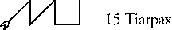

Occodon, Part 1 of 91, 1st of LIL. Zodiacal king: Zarzilg Mundane association: Egypt.
I recited the Call of the Aethyrs for LIL, and invoked the part named OCCODON, and its 7209 resident ministers, by the power of the zodiacal king Zarzilg. At first the response was very faint, barely perceptible. I repeated the invocation of the various names, and it increased slightly but still did not seem inclined to generate any sort of image.
Thinking of images that might ground and manifest this power, a picture of the pyramids of Giza suddenly came into my vision with power and certainty. It was a view from the west, with Cairo hidden in the valley behind them, and the sphinx invisible somewhere beyond the left edge of the view. The green of the Nile cannot be seen; there is nothing but sand. A voice spoke:
"In ancient times it was said that the world began out of the division of the Waters; and so it was. The primal waters divided out of themselves a portion of themselves, a reflection; these became the 'waters below' as the primal waters, taking on a role in relation to them, became the 'waters above'.
"Thus was born the essential division of finite existence; and within that first division did divisions multiply. Each 'above' had its 'below'; each 'left' had its 'right'; each 'behind' had its 'before'. And each division generated more divisions, until the world was shattered into a myriad of parts, each unique, each without comparison to the others, yet meaningless except when in relation to them.
"Thus also, these parts of the Earth which you explore begin not with unity, but with division; there is nothing but division within them, division and perpetual change. For that which is below and that which is above are confounded in the curse of god; intermixed, intertwined until none can know which is the greater and which the true lesser."
A flashing image here of the universe as a multitude of independent particles, with energies flashing between them. Some of these "particles" appeared as great as planets or stars, others more minute than the smallest quark, and with every range in between. The energies moved in every direction, from small to large, large to small, and back and forth among the middle sizes. It seemed that a tiny particle was just as capable of influencing one of the "greater" particles as those larger were of influencing it; there was no clear hierarchy among them.
Now the pyramid image returns, and my viewpoint moves back away from it. A single pyramid remains visible, and it becomes apparent that the landscape in which it sits is a small chunk out of the Earth's surface, floating free in space. Magritte could have easily painted this scene.
Above the chunk of Earth a starry night-sky is visible, color-tinged white pinpoints on a deep blue background. But below the Earth there is nothing but a blackness, entirely without perceptible features. A blackness which is utterly negative, which does not absorb the finite into itself (as does the great sea of the Supernals, and the greater sea of which it is the reflection) but which cancels it, makes it not to be by saying "no" to all its characteristics.
For a moment a tremendous stress builds between the sky and the lower blackness. An electric current builds between them, and suddenly becomes visible as twin lightning bolts vibrating in place between the sky and the darkness. After a moment the chunk of Earth vanishes from the middle of the scene, and for a moment the planes of sky and darkness and the twin bolts become the glyph of Gemini. Then the glyph transforms itself into a view of Egypt seen from orbit. The top bar of the glyph becomes the shore of Lake Victoria; the lower bar becomes the shore of the Mediterranean Sea; and the twin pillars or bolts become the sandy wastes that border the Nile Valley on either side.
"Thus is the world the center of division; finite life and existence can have their day only within the bounds of these great divisions of power, in the central area where all the opposites mix in varied proportions. Move too far towards the upper waters, and one returns to them, sacrificing finite existence for the greater; move too far towards the lower waters and one dissolves in their negation, becomes not. Move too far towards any horizontal extreme between them and one perishes in the dry death of false singularity.
"And thus also is this division reflected in the Call of the Aethyrs, which has been called the Curse of God; for there is no center within the world, no point where one may become balanced and still without end. No point can remain balanced, for the balance is ever changing, ever moving; and the various parts pass in turn over the hypothetical point of balance, seeming for a moment to be the center but then passing out again into an unbalanced state.
"So as well is the mind of Man. The 'self', the seeming 'I' that inhabits the being is truly not the center. For the mind of Man is a thing of many parts, interacting, fighting and cooperating by turn in various combinations. It never rests from change. The 'I' has no constant nature, but only the nature it takes on from those parts of the being that are dominant at a given moment. For all practical purposes, it is those parts and their interaction, and nothing more. The seeming continuity of its existence comes not from itself, but from the River of Memory, carrying the sensations of past moments in itself, taking them downwards in the being to be deposited like silt in the delta at the edge of the Dark Sea.
"Now 'I' [said humorously] could continue this metaphor into many other areas. But needs not; we have seen sufficient of it for the moment. But consider, as a final example of the metaphor, the political customs of ancient Egypt. Therein the seeming balance and centrality of the Pharaohs (representatives of the Sun of "Self") was never more than a superficial image hiding the perpetual infighting of the priests of different cities and gods. Each constantly striving to make themselves dominant, each taking in turn the central position and losing it again. And consider that the Sun-self of Egypt itself shattered eventually into a myriad of divisions, and died, and was carried by the Nile to vanish in the Dark Sea.
I asked the unseen speaker whether he might show something of the ministers of this part of the Earth, and of its nature in other aspects of being. It said "Not at this time." I asked if there was anything else to be seen at the moment, and receive only silence as an answer. So I spoke my thanks and departed the vision.
---------------------
Seer's comments:
The content of this vision is fairly clear, and doesn't need a great deal of comment. Since we are working here with a "downward" current, it begins with a fall from unity into disunity, chaos, and discord. Appropriately, Occodon is ruled by the zodiacal king of Gemini, the most dualistic of the signs. The characteristics presented are typical of Gemini, but raised to an archetypal level.
Egypt, the mundane region governed by
Occodon, is used as a metaphor for the Earth, the human being,
and human society, as they are affected by the power in the Call
of the Aethyrs. The four-sided pyramids might represent the seemingly-ordered
worlds of human experience, resting on a foundation of chaos --
the ever-shifting particles of the desert sands.
Pascomb, Part 2 of 91, 2nd of LIL. Zodiacal King: Zinggen. Ministers: 2360. Mundane association: Syria
7/15/1994 2:40 p.m.
I invoked PASCOMB by the power of Zinggen and the Aethyr LIL, calling upon the 2360 ministers who dwell there to come and present its nature.
At first there was only a sense of a very strange energy. A sort of quintessence of sundering, without any object. As if an act of ripping something apart had been separated from the things being ripped and made into a spiritual ideal.
A voice said:
"A mighty tearing suffuses the universe, rending each thing from its opposite. That which is above and that which is below are sundered from one another; that which is to the right is sundered from that which is to the left; that which is before is sundered from that which is behind.
"And all things are brought to one level; each thing above is brought down, each thing below is raised up; that which is before and behind, to the left and to the right, are brought to the center and inextricably mixed.
"And out of that mixture are new dualities formed. None higher or lower than the others; there is no ranking here. Observe:"
There came before me the image of the sign of Gemini seen in the last vision, with its straight side pillars and the curved top and bottom bars. It underwent a transformation: the portions of the bars between the two pillars broke away from the parts outside; those outer parts blended into the pillars. Gradually the two center parts of the bars moved towards the center of the figure; as they did so, the parts of the pillars they passed ceased to be straight and became smoothly curved towards the outside. The bars met and merged together into one longer bar, and the sign of Gemini was transformed into the sign of Pisces.
"Thus it is with these parts of the Aethyrs, which God has made into parts of the Earth. For she is not a place of hierarchies, but a [spherical] surface; and upon that surface are the powers arrayed in their might. That which is shown as various spheres in Dee's diagram is not truly so. The parts are dispersed about her surface like the colors about the surface of a soap bubble; and like those colors, they are constantly shifting, changing their places. At one moment one might cover a great territory, only to be practically overthrown in the next by its neighbors."
(As the above was said, it was impressed on me in an instant that all the variations of the Earth's surface were minute and indistinguishable with respect to the world's size. The highest mountains and deepest ocean trenches vary less than one part in sixteen hundred of the world's diameter. In relation to its size, the variations in the Earth's surface are no more significant than the variations in thickness that cause the color shifts of the soap bubble. Why this should be emphasized, I don't know; perhaps I missed something.)
Now I saw an image of the world with the Aethyrs arrayed about it in concentric spheres. Again there came the sundering force that opened the vision, and all these spheres were broken into pieces. The pieces tumbled down towards the Earth, and as they hit the surface they slid over and around each other until none of them was above any other. Gradually they expanded and shifted until they covered the entire surface.
Each of these pieces seemed to be both a sort of energy and a living liquid at the same time. I could distinguish them by their differing shades and hues, each unique. Now they seemed to be at war with each other; the effect was of a bunch of brightly colored slime molds fighting for territory. Each pushed against its neighbors, seeking to gain more ground for itself. One might lose ground for a time, but was never completely extinguished; if all its territory in one place was taken by its neighbors, it simply sprang up again in another place where the pressure was low.
And it seemed to me that each of these living "parts" was in fact the cause of some idea that lives in the minds of men, or rather of those shared perceptions and ideals that make up the identity of a nation or a group. Because each part is unique in its essence, it follows that all groups must be in conflict with each other at one time or another. Harmony is the result of likeness or complementarity of nature; where likeness does not exist, there must be friction and conflict. Thus the idea of complete unity among nations is doomed to fail, as is the unity or harmony between groups within nations. If a certain type of belief or government is overthrown in a certain part of the Earth's population, it will simply appear again in another part, or as a minority belief within a particular culture.
The voice said: "Thou hast grasped it. Thus it was said to Dee that these parts governed the governments of the Earth, and that one could manipulate those governments through the use of the power of the corresponding part. It extends through all levels of organization within the world; since all individuals are unique, they must at sometimes be in conflict with their neighbors. And thus it was said in the Thelemic book that Horus, god of War, is the ruler of this world.
"We would emphasize again that the parts of the Earth, and the Aethyrs from which they spring, are not expressions of the unity of existence, but of the aspect of discord. In this they are the complement, the necessary balance to the divine and angelic Names derived from the Great Table by orderly means. Those names and hierarchies show the unity aspect, the merging of the discord of events into the singleness of spirit. Here we deal with the shattering of that unity, with its expression in the unspeakable variety of unique events taking place in the world at any moment.
"Now, in order to continue, we would have you wait for an hour or so, and relax. For there is more to see, but the time is not quite right. Return again today.
7/16/1994 8:04 p.m.
(I did not return to the vision until now because the timing felt wrong.)
I again recited the Call for LIL and invoked PASCOMB. After a few minutes the force of the Part came strongly. The Voice continued.
"Now, you have grasped the connection between the power of these Parts and the actions of government. Truly, the world is in a constant state of war, from the standpoint of the Aethyrs. And the most active, violent of those wars at present take place not upon the physical plane, but upon the planes of emotion and reason, For each Idea has power within these worlds, and any Idea which is supported at its core by the creative power of God (as most are) cannot be eradicated wholly from the world.
"Even should it be wholly washed away from the minds of all living beings, it would arise again spontaneously. For it requires not the power of men to maintain its existence; its has an energy separate from their recognition and support. Should it be washed away, then at some future moment, some man or woman would (through natural affinity) touch its power with their mind, and it would instantly become real within the world again.
"This war is perpetual, and the only thing that changes its character are the slow changes in the consciousness of God, as its creative plan evolves over time. At any given point in time, some ideas are emphasized by these changes and others de-emphasized. Thus in the previous age did social ideas take an extreme hierarchical form with those on the bottom serving those on top, while in this present age are social ideas more oriented towards the masses of men and their needs.
"But the dominance of one sort of ideal does not eliminate the others; they remain always, and insinuate themselves into the functioning of society and of life in the details of activity where they cannot gain dominance in the overall rulership. And if that dominance of an ideal should fail, then others -- temporarily suppressed -- regain their prior place. Thus the rapidity with which the Soviet Union devolved into its cultural predecessors; the local cultures had not been absorbed by the ideal, but only overlaid, partially smothered by it.
"And the war is reflected even in the functioning of the living things of the world. For each type of animal and each type of plant is at war with those upon which it feeds, even as it is dependent upon them. And each unique being fights against its neighbors for its share of the available resources. Trees wage slow, years-long battles against each other; lesser plants feed upon the detritus of that war, and wage their smaller wars beneath. And so on.
"Never shall this conflict be done, no, not even should the Kingdom of Heaven come. For it is the nature of the third of the three Great Aspects of God's creation (of which the body, emotions, and mind are a part) that every particle and composite being within the world shall respond uniquely to the power of God's creative will. Where the proper goal of each is unique [i.e., it's "true will" under the power of the divine] then conflict inevitably arises.
(On an unspoken level, it was also mentioned that unity lies only in the Second and First divine aspects, those of Love and Will (or Being), both of which are entirely spiritual in nature, and come into the manifest world only through the action of initiated sapients.)
"There is no unity within the manifest world, nor shall there ever be. Those who seek to impose such a unity, through law or morals or "correct behavior" are doomed to failure. God wishes it so; were the manifest world one in all ways then it would no longer be a fit material for His creative activity, and for the creations of those lesser beings who dwell within it. Creation is change, and change always brings conflict.
"Now we have said enough and would end here, if you will."
I said I had no questions that had not
already been answered in the nonverbal subtext of the presentation.
I thanked those who spoke, and ended the vision.
Valgars, Part 3 of 91, 3rd of LIL. Zodiacal King: Alpudus. Ministers: 5362. Mundane association: Mesopotamia.
7/19/1994 1:10 p.m.
Recited the Call for LIL and invoked VALGARS by the power of the zodiacal king Alpudus.
The vision opened with an image of the glyph of Pisces as in the previous vision. The glyph was colored a deep ocean blue. Immediately the crossbar of the glyph broke in two places, close to the curves. The remaining part of the bar contracted to a dot between the two curves, the parts of the bar still connected to the curves were absorbed into them.
The two curves rotated about their centers so that their lower ends came together. For a moment a half-moon seemed to grow off of the top of the right-hand curve, so that the whole figure seemed like an Enochian letter "B". The dot between the curves became a diamond. But the half-moon quickly disappeared and the figure turned blood-red, becoming the glyph of Aries.
The glyph tilted away from me and moved away at the same time. From below an image of the Earth came into view, and the glyph descended, coming to rest with its two arms conjunct with the Euphrates and Tigris rivers. The dot between the arms marked the location of Baghdad -- actually slightly north and west of there; perhaps ancient Babylon. The point where the arms met did not quite touch the Persian Gulf; it ended in the marshes where the two rivers meet.
The view descended towards the Earth, and I saw that it was indeed Babylon that was depicted. The region surrounding the city was green with growing crops and grassland; not the dry waste of current-day Iraq. Across the river to the west I could see forested hills.
The city was enclosed in a long wall, save for a short stretch of the river bank near the center of one wall. This gap did not seem to be deliberate, but rather the result of erosion undermining the wall. Within there seemed to be a smaller area with high walls as well; perhaps the area of the palace and main temples.
Now the viewpoint rotated around the city to the eastern gate. A long thoroughfare extended west to an unfinished ziggurat. I saw people moving down the avenue towards me; they passed through the gate and dispersed to the four directions.
The Voice spoke:
"The tower you see is of course the so-called Tower of Babel. And the people are dispersing as was said in the biblical myth. But it was not the hand of God which produced this effect, except indirectly, through the power of the Part governing this region. The symbolism of the Tower is of course the symbolism of Mars, ruler of Aries. And it is the characteristics of the sign and its ruler that are here represented in one aspect.
"You know of course that Aries represents the initial outpouring of force that begins any project, any work of creativity. It is the force that overcomes the inertia of matter and moves it into a different state. But this force is short of duration; it gives out quickly, burns itself up. If the work of creation were to continue, it would need to be imbued with the longer-lasting force of Habit or Custom, which maintain the new state. But that is to be seen elsewhere, not here.
"What is shown here is the illusory unity provided by the imposition of force upon disparate, chaotic elements each having their own unique nature. Such unity never lasts; as soon as the force is exhausted, or directed towards a different goal, then it dissolves into its initial elements again. This is as we said in the previous Part, here manifested in its actuality.
"The various cities of the lands between the two rivers at times tried to impose their rule on their surroundings by force. Their rulers sensed in their minds the nature of the power of this Part, and attempted to manifest it. But such rulership was not natural to the area, was imposed upon a pre-existing "culture" in which smaller specialized settlements coexisted in a complex network of trade.
"In this earlier culture, the specializations of each town depended upon the resources available in their area. One being close to clay deposits would engage in the manufacture of pots and bowls. Another having flint would make cutting and digging tools. Yet another might have timber, or medicinal plants, fertile grain-growing lands, or grasslands for cattle. Each of these would make the most of its local resources and trade along the network for the other items they needed.
"This is not unlike the current-day state of the world economy, though in miniature. And the failure of the imposed rulerships of the great cities gives a lesson that might be learned today.
"The early centralized rulerships were initially accepted for the same reason that every government since has been accepted. It seemed advantageous to the people of the towns to give over a portion of their production in exchange for protection from the larger losses to criminals and raiders along the trade routes. But once the principle of centralized rule was accepted, things rapidly went downhill.
"The rulers must draw more and more on the productivity of the towns in order to widen their rule. The wider the borders of the kingdom, the larger the portion of production that must be spent on defense and internal regulation. This is simple geometry. Eventually the point of diminishing returns is passed; the rulers can no longer take enough resources out of the economy to maintain their rule. The hardship for those from whom it is taken increases until they are no longer willing to support the "national" government, and the system collapses.
"In the Babel incident, it is this failure of resources that is the true cause of the disruption. The craftsmen who were building the tower were drawn from many peoples in the area, each of them with their own customs and variation on the regional speech. When the rulers could no longer pay for their services, they perceived this as a sign of divine disfavor; their confidence in the communal project was lost, ethnic tensions increased, and finally they left to return to their home towns.
"This is the failure of every government that seeks to rule by force, from ancient Uruk and Ur to the present day. In those earlier cases, the process was sometimes advanced by deterioration of the climate, or -- more commonly -- by the failure of crops upon which the city-dwellers were dependent.
"The region of the Earth governed by Valgars shows this tendency with particular emphasis. One after another came conquering rulers; many of them inspired by the imaginary "glory" of the memory of their predecessors. The early cities, the Babylonians, Assyrians, the Baghdad of ancient times and the present, all have sought to rule and each has fallen back into chaos when their power was no longer sufficient to the task. Over and over the same story is replayed. Even now, the ruler of Iraq perceives himself as the incarnation of an ancient Assyrian ruler, dazzled by the vision of restoring ancient glories even as his nation is rent asunder around him.
"Like the flow of the two great rivers, the power of this Part seems mighty in its beginning and continuation, but in the end it collapses into chaos; as the two rivers become lost in the great marshes of their combined delta. When their waters finally reach the sea, they get there through a myriad of tortuous channels, not in the great unified flow that their beginnings promised. And so it ends, always.
"Now we would like for you to continue with these visions; it seems to us that you would be doing a service thereby. But be not concerned if there be interruptions, hiatuses in the work. For this is necessarily a long-term project, and it is certain that other tasks and opportunities will come between at times. Do what thou will, when thou will, and we will be accessible to you. We are done, for today."
I thanked the Voice for its presentation, and ended the vision.
Seer's comments:
This completes the Parts attributed to LIL. It is too early to speculate on the complete course to be presented, but some obvious connections can be made between these three parts.
First, all three deal in some way with the chaos or disorder that precedes the initiation of a creative act -- and which may well be stimulated by the first inflow of creative force. There is an increasing constraint upon the unorganized materia as the visions progress: Occodon defines outer boundaries, Pascomb organizes the content of those boundaries into conflicting elements, Valgars shows the first attempts to bring the materia into conformance with a creative will.
Second, each vision deals with a region that is (loosely speaking) bounded by water on two sides. Egypt by Lake Victoria and the Mediterranean Sea, Syria (mundane equivalent of Pascomb) by the Euphrates and Jordan, and Mesopotamia by the Euphrates and Tigris. The repetitive occurrence of opposed curves in the astrological glyphs is probably connected with this.
I get the sense that the "failure of government" theme of the three visions is a reflection of the fall from unity embodied in the Call of the Aethyrs. Were we taking the Parts in the reverse sequence, (as Crowley did with the Aethyrs themselves) it may be that these parts would show the final return to unity in the divine.
The presence of Babylon in the third
vision is odd, since Babylon has its own Part later on in the
series (number 80, Mathula). The region named Mesopotamia in Liber
Scientia is called Upper Mesopotamia today. I suspect that whatever
beings were the Voice of this vision were simply using it as a
convenient substitute for the city of Sargon the Great, who created
the first empire with a true centralized government in upper Mesopotamia
circa 2500 BC, and whose empire ended 160 years later in much
the way described. The latter name was apparently buried too deep
in the silt of my unconscious mind to be dredged up on short notice;
it popped into awareness about fifteen minutes after the vision
ended.
August 24, 1994 circa 2:00 p.m.
Everything is dark, dark. And in the center is a deeper darkness, that feels like a circular sinkhole in the fabric of the space, a cylinder of emptiness in the midst of things.
Now it seems as if this cylinder is becoming lit from some source inside it. Lines of light trace a rectilinear grid over its inner surface, and it becomes filled with a light like daylight. It begins to rotate on its long axis. Simultaneously, my viewpoint rotates about it in a horizontal plane so that I am seeing its length from an outside point perpendicular to the axis and equidistant from its ends. Its rotation is such that the upper side is rolling away from my viewpoint.
I can still see the grid inside it, vaguely through its surface. The grid becomes clearer, and begins to shine from the outside as well. The shining potions become raised in relief against the surface, and the whole takes on a sense of solidity.
Suddenly the cylinder begins to move away from me rapidly. It leaves behind an imprint of its shining lines, like the cylindrical seals used by ancients governors. It seems to be creating the surface it is imprinting as it rolls along. The cylinder recedes into the distance and vanishes.
The long, paper-thin surface it left behind now begins to curl upwards at the sides. The long sides come together, but in such a way that the grid-lines at right angles to its length are offset by one line at their meeting point. The new cylinder thus formed has straight lines along its length; the cross-lines, which were rectilinear in the original cylinder, now form several helices around it, due to the offset. Those parts of the "surface" that were not imprinted now dissolve, leaving a cylindrical net of glowing lines.
This process propagates itself along the length of the surface until any still-unconnected parts are lost in the distance. Nothing else happens for a few minutes.
While all this was happening, I got a vague impression that the helical net is a representation of the universe -- no, specifically of the solar system. Each of the helices represents a planet's course through space, while the straight lines represent the course of the system as a whole. And by correspondence, it also represents the psyche and experience of man, wherein events are cyclic but progress forward in time.
Now a voice said, "How else shall chaos be taméd? How else shall the disorder of creations' energies be brought into order? How else shall balance be attained? Is it not said, 'Her course let it run with the heavens, and as a handmaid let her serve them'?
"Change cannot be stopped or frozen; that way lies the grave, and the end of things. Yet it can be diverted, and set to run along a limited set of paths; paths which lead, in the end, to the achievement of the creator's purpose.
"Here in this region, the powers previously shown, the powers of creative energy unleashed within the Earth, are for the first time brought into ordering, so that the dynamic changes that take place in the world, by the will of god, shall all be (in the long run) of benefit to his purpose.
"Yet is this ordering hidden from the minds of men, and the lesser beings who inhabit the earth; they see only the surface of remaining disorder, the clashing of powers as they compete for influence over events. Thus is it said 'Confound the understanding of her with darkness'.
"Now let us move away from this for a time, for this is a profound mystery, and not to be revealed in its entirety. By other means might we know more of the action here. Let the 3636 ministers who dwell herein make themselves known."
A multitude of beings appeared. Most of them were dressed in judicial robes, some with the white wigs of English tradition. All carried implements in their hands; some a gavel, others a scale, others yet a book of laws. And among them was one who carried about him the image of the Six of Pentacles in the Rider deck; this one projected this image so strongly that the rest were hidden.
The voice said, "This card is called 'Material Success', and yet the image shows not a man among his wealth, as would be the case for that meaning, but a man standing with his head above the other people, carrying a set of balances raised in the air above their line of sight, while with his other hand he distributes gold to the lowly, some to one, more to another, none to others.
"Thus it symbolizes the function of this region; events conform to a balance on a high level, yet that which comes into the manifest world (represented by the kneeling figures) is of a seemingly random and capricious nature. And he who acts within those higher levels knows of the balance, yet cannot act within the world in a purely balanced manner. Thus he seems unfair, even cruel, to those who know not the God of Justice and his works and purpose. They unconsciously recognize his inner wealth, and view him with fear, and envy, and resentment, and with the urge to spoil. Thus does his balance evoke imbalance.
"So also with the ministers of Doagnis; they are concerned not with the justice of their acts as seen by the uninitiated, or by the lesser creatures of Earth. They act only to set god's limitations upon the chaos of his creative energies, to channel the Timeless according to the dictates of Time. For the outcome of those limitations in the worlds of men, they care not at all. For the world is an illusion to them, a place of horrors and joys quickly passed, ephemeral and unreal. Tis all a stage to them, and the men and women only players; they know that when the players remove their masks and exit the stage, then is the play seen for what it was, and the great trials of life are dismissed as a momentary dream.
"Now, you could penetrate further into this place, but it seems not necessary at this time. Come again when you will, or go on to another region. Fare you well."
The sense of the voice's presence faded. The image of the Six of Pentacles remained for a time, then it too faded. I left the vision.
Seer's comments:
According to the system I was directed to use for these visions, the Zodiacal King ruling Doagnis is attributed to Libra. The overall sense of the vision, however, was more Saturnian. The hole, cylinder, and rectilinear designs of the early part are all related to that planet, as are the general themes of Time and imposed order.
Even when Libra does appear, in the ideas of balance and justice, it is a lesser or degenerate form of the sign's ideal. Justice is not seen as a balancing of injury and compensation, or of mediation between conflicting goals, but simply as selective restriction on the individual expressions possible in nature. The consequence of such a view is often extreme injustice.
The three regions of LIL shown in previous visions all had something to do with the theme of "failure of government", consequent upon the fall from the unity of pure divinity. Perhaps it is not so surprising that this first region of ARN should go to the opposite extreme, seeking to impose an artificial unity (as represented by the rectilinear grid) as a substitute for the real thing.
The justice and order shown here is the false justice of the religious or political fanatic, the person who fears the unspeakable variety of existence, and therefor seeks to restrict it to "safe" or "correct" manifestations. It is the order of the person who mistakes his own internally generated image of god for god itself, who mistakes his own limited perceptions for those of god, and seeks to impose them on all others.
Compare the justifications following
the appearance of the Six of Pentacles with those of any idealist,
revolutionary or religious politician. Like those people, the
beings here justify their cruelties in the real world by claiming
to follow a "higher purpose", saying that the miseries
they force on their fellow beings are necessary to promote the
higher good. Like the Voice of this vision, they even lay the
blame for it on those they oppress, saying "It's all their
fault if they can't see the Great Purpose."
Pacasna, part #5, 2nd of ARN, ARN. Zodiacal King: ZIRACAH Ministers: 2362 Mundane region: Tuscia
Thursday, August 25, 1994 3:05 PM
As soon as I thought about doing this vision, my head was filled with light, of an odd quality. The old sci-fi hack's term "sleeting radiation" seemed perfectly appropriate. It felt like my head was being irradiated by some point-source that just happened to be coincide with its center, but was in no way directly connected with it. The radiation gave the impression of packets of energy that zapped outwards from the source, each leaving behind a streak of energized paths in the neurons of the brain. Each streak produced a sense of bubbling energy in the brain.
I vibrated the Call and appropriate names, and recorded the above paragraph.
After vibrating the names for several minutes more, a space started to appear. Rather than appearing and then remaining steady, it would become visible for a moment, then it would disappear again, then reappear. Rather like watching a movie with a pause between frames. The space did not seem to exist when not visible; there was no sense that events there had advanced any in the time between appearances.
Finally the appearance steadied. But the situation was not entirely improved thereby; now it seemed as if the space had two aspects, which I was viewing simultaneously.
In one of these views, I saw many people dressed in violet-colored robes with trim in the complementary yellow. Each carried some sort of box held before him. The boxes were decorated with ribbons of many colors, which drifted and waved about as they moved. I got the sense that the boxes held holy relics of some sort, or were themselves relics. Each of these people moved on a unique path through space, never touching or colliding with others.
As they moved, one or another of them would sing a note. And as that note reached the ears of certain others, they would in turn sing -- usually a different note, but one in the same key. Only a few responded to any particular note, but all of them were responding to some note within any short period of time. The overall effect was of a light rain in which the landing of every drop produced a different tone.
It also seemed that every time one of them sounded a note, the ribbons on the boxes they held extended a bit further out into the surrounding space, each ribbon still waving in invisible currents. Eventually the entire space was filled with crisscrossing ribbons, practically obscuring their origins.
The other view was less striking. Balls of light moved on slow orbital paths through the space. Occasionally one would throw out a smaller bit of light, which would move along until it hit another large ball. The receiving ball would momentarily brighten and expand its diameter; after an irregular period of time it would in turn throw out a smaller ball of light, at the same time dimming and becoming smaller.
Turning back to the first view, I examined the boxes more closely. Each was made of square panels with smooth square borders covering about one-sixth of their width. The center of each panel, each side, was filled with intricate carvings in every imaginable style and subject-matter. The carvings moved as I watched, so that the pictures unfolded their stories. The movements went in jerks -- a change, then a short wait, another change, and so on.
E.g., in one showing a mass of ivy, the vines would slowly move and sprout new leaves, live a time-lapse image of plant growth. In another a macabre scene showed a woman being slowly burned at the stake while peasants and a demon in priests robes watched, danced, and talked among themselves. In another a composer slowly set notes of a score onto paper. I had the impression that if I looked long enough I could find the whole world's history and human activity represented in the sides of these many boxes.
But at the same time I sensed that these scenes were superficial. They did not in any way reflect the contents of the boxes; they were all "outside" and no "inside".
Examining the interior of one box I found -- more boxes. Each was like the one that contained it, in that it had ribbons waving about it and panels with pictures. It seemed that each of the major boxes contained its own universe of smaller boxes, and possibly each of these in turn contained its own internal universe. And if I suppressed knowledge of the enclosing level of boxes for a moment, it seemed that these smaller boxes connected not only with those in their own "universe" but as well with those in every other.
I began to weary of looking at this Chinese-puzzle world, and thought it was time for the Voice to come and make some explanation of things. After a few moments, it did so.
"You have already recognized the essence of this vision, and I will leave it to you to explain in your notes. Let us touch upon some other concerns at this time.
"The boxes are, as you guessed, entities of some sort or another; not always, or even usually, human, but organizations of matter into complex forms. Any of the kingdoms of nature might be represented, or any of many other unrecognized systems.
"Each such entity carries with it not only the behavior it presents to the world (in the form of the pictures) but also its own complete history of existence, and [emphasized] the history of every component that went into its making, back to the very beginnings of things. And each of these components continues to interact with the rest of the universe in its own terms, even as it acts as a part of the larger whole. This is the true living order of existence, as opposed to the sterile, dead order of the previous vision. Explain the rest as you will; it is no great difficulty for you.
"Now, what I intended to remark upon was the manner in which you might progress further in your understanding of the Enochian universe and its god. This is a matter not entirely related to these visions of the Parts, and so should not be done by me. Bide a moment and another will come and tell you."
I waited. After several minutes there were brief shadowy images of a figure standing before me. Nothing more happened, so I got up and went to the bathroom, then sat on my bed and meditated for a while.
There was a feeling that I needed to be in a different space in order to understand what was coming. Reaching out to sense that space, I tried to discard the power of the Part and adopt the new one.
Shortly I had a brief sight of the Comselha circle, as seen from high above. As described elsewhere, I noted a toroidal field of force around it, with a beam projecting upwards from the hollow center. I felt myself drawn into this beam. Gradually it drew me upwards until I was within sight of the interstellar nexus being built on the edge of the Earth's aura.
I noted that it's construction seemed to be coming along well. Only a couple of unincorporated sections remained at a distance from the main structure, and that structure was solidly anchored by heavy beams directed at nearby stars and the Earth.
The core levels appeared to be completely finished; I could see no gaps in the sphere. A larger surrounding sphere was almost complete; I sensed that several individual lines of force still needed to be anchored.
Moving into the center of the sphere, I saw a glyph high up on one wall. I could not see it clearly, but it appeared to be a cross between the Hindu OM and the glyph of Capricorn. Perhaps this was a designator for stars or constellations in that direction? Other glyphs also appeared, but even more difficult to see, as if as yet their force had not be completely set in place here.
Sunday, August 28, 1994 1:03 PM
For some reason, I wasn't very happy with the vision of Pacasna, and decided to do it again, just to see if anything else could be seen.
Vibrated the Call twice, vibrating the name of the Aethyr a few times in between. Called upon Ziracah to direct the ministers dwelling in Pacasna to come to my aid and demonstrate the power of their part of the Earth.
Almost immediately I got the same sense of "bubbling energy" the opened the previous vision. No images appeared, but I started getting intuitions about the Parts.
It occurred to me that these first two parts of ARN represent, in an odd way, the "mother" and "father" aspects of existence. Doagnis placed a heavy emphasis on Time and Regulated Motion as the sources of Order. Pacasna places the emphasis on Energy and Innate Relationship as a sort of non-imposed order, with an added fillip of Unpredictability. So their essential natures are contrary.
It also occurred to me that Doagnis places more emphasis on the influence of the "higher" worlds, represented by the astrological forces, where events are collected into a sort of synthesis by their relationship to those forces. Whereas Pacasna places emphasis on the seemingly chaotic manifestation of events within the "lower" worlds, where the unique natures of things have their expression -- as represented by the highly varied pictures that appeared on the sides of the boxes. (Note that the boxes are all "outside" and no "inside", as might be said of manifestations in Malkuth as the world of shells. Thus the duality of the two parts is shown again, and the theme of Division common to the Parts in LIL is continued as an unspoken background.
One might also contrast the two as representing respectively the relativistic and the quantum mechanical views of reality. The events in Doagnis occurred in smooth, continuous changes of state; events in Pacasna occurred in discrete "jumps".
And again, in Doagnis there is a definite hierarchy of above and below. In Pacasna hierarchy is a matter of arbitrary viewpoint; events on all levels are essentially similar, and take place at the same time, with no way to tell which level of events is causative or most significant.
I also get the impression that the three Parts in ARN are in mirror sequence to those of LIL. Where in LIL the order goes 1-2-3, in ARN it goes 6-5-4. Thus I am doing the Parts in backwards order, as far as their interrelationship goes. It may be that this is the reason for my sense of dissatisfaction with the visions; I am seeing the end before the beginning.
Having received these intuitions, the
energy of the Part lapsed, and I stopped attempting to receive
more.
Monday, August 29, 1994 2:10 p.m.
Vibrated the Call and the appropriate names.
I first saw the sigil of the Part drawn within a circle on the ground. The name of the Part was written in both Enochian and English letters in a border around the circumference, so that the whole had the appearance of a simple talisman.
Next a woman appeared within the circle. She had blonde hair and her face was hidden behind it. She was crouched down on her right knee, her right hand on the ground. Her left arm was raised and bent back as if she was trying to remove something from the back of her neck. She wore a she wore a white summer dress of some light fabric.
Her posture reminded me of the Crowley's Tarot card "The Star". But even more, it recalled one of Rodin's more striking sculptures, called (I believe) "The Helmet-maker's Beautiful Wife". The sculpture shows a crone in a similar posture, and carries a tremendous freight of sorrow for lost things. The figure in the circle sends forth a sense of great sorrow, and of being one on whom an unbearable load has been placed. (I am reminded as well of another sculpture, I think also by Rodin, called "Caryatid Fallen Under Her Stone".)
Now the figure before me cries: "Woe! Woe! And again Woe! I am beset by those above me and those below. The ones above me seek to bind me to them in unity; those below seek to disperse me into chaos. Yet in myself I am neither one nor many, and their pressure wearies my soul to death. How shall I escape these evils?"
An angel comes forward from the upper right of my field of view, dressed in violet robes. It pulls the figure out of the circle, and takes its place in the same posture. After a few moments it hardens into stone, or forms a shell of stone in its own shape, to take the load. The angel then leaves this stone figure like a ghost leaving the body, and stands beside the circle with the original occupant, who is now clearly a young woman of an airy nature.
The angel makes a sign like alchemical sulfur towards me, apparently expecting it to be returned; I do so. Then another sign like the "V" of LVX, but the impression is of a descending triangle over a cross. Again I return it.
The angel turns to the woman, and performs a series of gestures I don't recognize. But I know as they are done that they spell LILITH, followed by a gesture of releasing.
As the gestures are completed, the woman goes through an astonishing number of transformations in an instant, becoming many different women in turn. Without, seemingly, changing her essential nature. Finally she turns into a woman of some non-Semitic Middle Eastern race; long wavy black hair, dark eyes, olive skin, in the skirt-and-girdle outfit seen in some pictures of ancient priestesses. Snakes appear, curled around her wrists. Then she vanishes, absorbed into the fabric of space itself.
"Know" the angel said, "that all acts of creation act upon a pre-existing substance." Answering a question in my mind he said, "There was no first act of creation; all has ever been in process. And this substance precedes even that process. None of any level of reality know its origins or destiny.
"This substance, protean, ever-changing, livingness itself, is that out of which all creations come. Binah is its reflection in our world, though it surpasses Binah in all ways, and surpasses the Wheel and the Point as well. And here it is reflected again in the substance of the Aethyrs, as it must be in any of its children.
"You will see her anon in other Parts, as she takes on other roles with respect to this creation. But in this place, as you have sensed, she is acted upon by the force of the other two parts within ARN, as the substance upon which each seeks to impose its form of order within the world. And so she was first seen as placed under a burden, as the pressure of one and the other sought to mold her into their preferred form.
"But in her essence she is above both, contains both, and cannot be so limited. And the action of those Parts causes to be formed instead an image, an illusory construct (of a lesser order of existence) which fulfills their intent.
"Now the previous two Parts represent, each in their way, the primary themes of the substance aspect of existence within this world. [The word "substance" was emphasized.] On the one hand, smooth motion, cyclic appearances, direct causation and spiral progressions; on the other hand, sudden jumps, indeterminacy, acausal relationship, and dynamic, mutually affective interactions.
"The lesser cannot contain the greater, and so their action is futile in the extreme; certainly no great part of the divine substance shall be formed to their will. They cannot even contact it in its essence, for their level is not high enough. But part of its manifestation [emphasized], the product of previous cycles of creation, is amenable to their intent, and visible to their eyes. And this portion they take for the whole, and press upon.
"And in the process they summon, for a time, by its intrinsic connection with Her, something of the true substance. This gives new life to the old manifestation, allowing it to mutate and change in accordance with their will, taking on the desired characteristics without losing anything of its past history. It groans like a living thing under the burden of their will, until it is changed and the changes established as a permanent nature.
"The task being complete, the summoned portion of the divine woman's power is released, and the manifest substance goes more or less its own way, in response to the subsequent promptings of the creators involved. The direct activity of the higher substance lapses, and whatever portion of its livingness was involved returns into itself.
"It is in this releasing process that we ministers of Dialioa have our work. Our task is to ensure that the higher substance does not remain, for to do so would be to give greater weight to the actions upon its manifestation than is desirable. There would be a continuing impression of the will upon the substance aspect.
"This is a subtle thing, but must be understood. The substance forms the base of a creation, and has certain characteristics inherent as a part of that creation. But the purpose of the creative act, the goal of the creator's impulse, grows out of the substance along another, different dimension. It is an overlay upon the substance, not an inherent part of it.
"To understand this, consider that the image in a painting, and the emotional, mental, and spiritual expressions built into the image, are not inherent in the paint which the artist used. The pigments have certain qualities, yes, but they are merely raw stuff of making, and it is only in their artful combination that the higher purpose is revealed. That purpose is never apparent to the consciousness of the atoms in the paint, but only to creatures of the same or higher type than the creator. It simply does not exist in the paint itself.
"Thus also with the manifest portion of the divine woman's substance. If her essence were to remain in the manifest substance beyond the time when it has been prepared as the raw material of a creative act, then the material would attempt to respond to the higher purpose of the creator, and attempt to build that purpose into itself. This is not desirable, for if it attuned to one stage of the creative act, then it could not properly respond to the later stages.
"It would be as if a glob of red paint became infused with an indelible quality of "violence", so that it could never be used except in paintings of a violent nature. Were the artist to attempt to use it to paint, say, a rose in the hand of a young girl as an expression of innocent appreciation of beauty, then the violence of the paint would send the artist's intent awry. The artist wishes his material to have just those generic qualities that make it widely useful, and no more."
Here a pause of a few minutes.
"Now is this woman, this Lilith who takes all things into herself and gives them substance, too much to be known within a single Part -- or even within a single Aethyr. The Pan behind Pan is she; he is a silly country bumpkin by comparison. Nuit she is, and Babalon of the Thelemites, and many others; and none of these images touch even the hem of her garment. The entire universe descends out of her womb, yet she is not stretched or strained thereby. Time before time, Space before space, being that precedes all being is she. One Mother to whom the many Fathers apply themselves, she remains yet virgin. No one truly knows her, yet all descends from her, is contained in her, all is maintained out of her life.
"Endless -- literally endless -- superlatives could be applied to her, and leave none the wiser. Therefore will we cease. But she will come again, in many forms, as we continue this path of the Parts. And she will come to you again in time, as she has in past times.
"We are done."
Seer's comments:
The appearance of Lilith in this vision struck me as familiar, so I dug out my copy of Vision and the Voice and re-read the section for ARN. There are some general similarities of symbol, despite a contrast in the details. My own symbol-set is substantially different from Crowley's, and this of course affects the results. As well, A.C. was working his way up through the Aethyrs, trying to force a return to unity against the general flow of their force. Here we are working from top to bottom, in line with the flow.
The zodiacal king ruling this Part is again Ziracah, Aquarius. Thus the opening image reflects the Water-Bearer of the Tarot card. But there is a strong Saturnian element in the aura of burden, oppression, and sorrow that surrounds her, and this expands into a more general Binah nature.
The cry of the figure supports this position; "those above" are Kether and Chokmah, whose force descends and gives form to the unconditioned primal substance of Binah. "Those below" represent the dispersal of the Abyss, and the transformation from transcendental wholeness into the myriad of finite events that make up existence in the lower, non-transcendental spheres. She is neither one nor many because the distinguishing characteristic of the primal substance is its total lack of distinguishing characteristics. It is NOT anything that can be comprehended or imagined by a finite consciousness.
Finally a minister of the Part appears and (being like in nature to the Part) takes the place of the woman for the completion of the transformation into finite form. Just as the Saturn aspect represents a minor and lesser part of Binah. The creation of a finite form having been completed, the angel releases the remaining substance back into its transcendental state by invoking the yet higher state of which it is a reflection.
My own conception of Lilith comes from the goddess-religions of the age of Taurus; she has nothing of the demonic aspects added by the male-oriented cultures of the following Aries age and perpetuated by the fears of the Piscean age. She is an aspect of Innana or Ishtar as All-goddess, specifically the starry night-sky, as her name LIL-ITh might be translated as "night's essence". The last form she takes in the vision before vanishing is the form of that goddess. This same form appeared in Crowley's vision, but he interpreted it in terms of the corrupted tale of Eve and the Serpent.
The function of the priestess of Lilith was to attract men to the temple for the performance of the sacred rites. In Thelemic terms, she is the priestess calling "To me! To me!" And each woman, in her initiation into the temple, took on the role of Lilith with some man, invoking her "under her stars", becoming the goddess for a period of time. Any child issuing from such union was considered a child of the goddess and some god, not of the human bodies through whom the act was performed.
In the higher aspect represented here, she is the primordial "stuff" out of which all creative entities form their creations. The creative, "male" counterparts are the multiple entities of the region Pacasna, a multitude of Hadits to her Nuit. To make the connection between Lilith and Nuit even firmer, the former name might be interpreted as LI-LITh. "LI" means "To me" or "unto me", the call of Nuit; LITh means "none", Nuit's nature.
The remainder of the vision deals with aspects of the divine creative process, and is best understood through meditation. I believe that the overall nature of this Part can be summarized as concretion of essence followed by release of any excess essence.
This completes the regions of the Aethyr ARN.
It has occurred to me while re-reading the visions that there is some connection with Achad's Tree being developed here. The visions of LIL might represent the descent of the creative force from Kether to Chokmah, via the path of Jupiter. Thus representing the initial imbalance that results from movement away from the Still Point.
The first region of ARN, with its heavy Saturnian flavor, is the secondary descent from Kether to Binah, via the path of Saturn. Note the resemblance between the "grid" of that vision, and the grid surrounding the hermaphrodite in Crowley's version of the card, or the bindings of the wreath around the herm in other versions.
The second region of ARN, strongly Aquarian-Uranian, would then represent the passing of the male creative power from Chokmah into Binah via the path of Aquarius. The final region is Binah itself, the primordial stuff reflected into the lesser area of creation that is the Earth.
Obviously, with 91 Parts there is going
to be a lot of overlap somewhere along the way, in any correlation
between them and the Tree. It seems more likely to me that the
Parts will only occasionally become congruent with the Tree, and
that the rest of the time they will touch on things outside that
matrix.
Thursday, September 01, 1994 3:29 PM
Vibrated the Call and invoked the names as usual.
The sigil of the Part stood before in vision for a time; an air of aggressive presence radiated from it. I absorbed some of this radiance into myself, and as I did so began to see into another space behind it.
The second space was filled with light of a bright, electric-green color, just slightly greener than Mt. Dew soft drink. Within it were tiny flakes of another shade of green, also electric, so that the overall effect was of a liquid with particles suspended in it.
Nothing happened for a time, and my thoughts drifted off into things I might add to the book. After a brief time my attention returned, and I noted that my astral body felt as if it were occupying the same place as the sigil. Gradually the viewpoint drifted forward through the sigil. Turning, I saw it as a gate into the space where I now stood. My viewpoint was now split in two, half continuing to see the green space, the other half in whatever place the gate of the sigil led to.
I vibrated the name of the Part for several minutes. Nothing more happened. Finally I gave up on trying to get the Part to manifest as a vision, and tried instead to simply get its energies to come into my body. I withdrew all my attention into my body and reoriented to this new purpose.
The effect was immediate and overwhelming. I was hit with a flow of force that threatened to dissolve my awareness into a swirl of particles and blow it away. For a few moments I was so disoriented that I almost fell out of my chair.
Leaning back and closing my eyes, I tried to relax my magickal body to accept the forces. For several minutes there was chaos; the force, like an abrasive wind, whipped away parts of myself that were not in tune with it, stripping off parts that were attuned to lower levels of reality and leaving behind only their higher-plane equivalents.
Finally the worst of it was over and I began to see clearly again. It was apparent that on some level everything removable had been stripped away from me, leaving only a skeletal structure of adamantine hardness. There did not seem to be any pattern or balance to what remained; it was simply composed of those parts of my structure too tough to be affected; within my aura they formed a structure as random and jagged as the casting of a deep-sea worm.
The force continued to flow, and it became apparent that these remaining parts were in some way either restricting that flow, or casting a shadow such that I could not see this Part clearly. Perhaps both. Worse, it was clear that the very mind-set necessary to my visionary work was itself adding to the restriction; perhaps my nature as a being was simply incompatible with the forces here.
This constricting feeling became stronger. I assumed the asana called "The God" in the hope that this would allow a freer flow. It did not. Physical symptoms began to appear -- shortness of breath, feelings of constriction from my clothes, wristwatch, and glasses. After several more minutes I got up, stripped off all of it, and sat on my bed in half-lotus. This eased the physical sensations (but did not completely erase them) and I could give my attention fully to adjusting to the force.
For the next half-hour I gave my attention to deliberately relaxing the parts of myself that were resisting, one by one. Eventually I had to stop from exhaustion; the work was that hard, and remained incomplete. I lay down and drifted in a half-trance for a while, then got up and completed this record.
I am tempted to skip this Part and go on, but I resolved at the beginning to do them in order, and it seems best to continue, despite the difficulties. I would guess that it will take at least two more sessions before I can penetrate into the Part fully.
Friday, September 02, 1994 1:17 PM
Vibrated the Call and appropriate names as usual.
Upon vibrating the name Samapha, I became filled with an energy much like yesterday's; power with a very high vibration rate, which tended to throw off anything it contacted that was not of a compatible nature. While still completely in my body, it seemed that this power had somehow cast off parts of my aura, leaving behind structures similar in function but of a much higher quality. There was also a sensation of heat distributed throughout my body, but particularly noticeable on the insides of the thighs and calves.
Turning my vision to the astral level, the first thing I saw was an image of the Tarot card "The Lovers". This lasted only an instant; a third figure was added between the man and woman, and the background transformed until it was the card "Judgment". Specifically, the version seen in Wang's G.D. deck. The angel was within a white triangle surrounded by a circle formed from the Great Serpent.
(I suddenly understood that the green field that opened yesterday's vision was in the flashing colors of fire. The electric green would flash with red, and the darker green flakes would flash with scarlet.)
Now a voice said: "Judgment has come; but what is it that is to be judged? A man? No. A demon? No. Only that which is of the nature of the Fire can pass through the Fire. As it is said: ultimate sparks of intimate fire.
"That which is of the Earth is not of us; nor that of the Sun, nor that of the Realms of Death and Destruction; we are wholly within the highest. Power is ours; power to create the world, power to destroy it again. We are the essence of the divine creative will, personified and made manifest. We descend from on high, and that which we touch is burned to ash, burned to make way for that which is to come, in glory, from the all-highest.
"And shall you pass us, O man? Not at this time; we speak not for the future.
"We descend from on high, and everything before us is laid waste. The gardens of Isis are desiccated and burned. The might of Horus is laid low. The dissolving seas of Set are evaporated into steam, which rises up into the sky and disperses. The realms of Thoth survive, but are transforméd; only glittering crystalline threads remain where once were living thoughts of the purpose of god.
"Call us the Teeth of the Serpent. For as the Serpent rises up the Tree, so his head is in Kether, and his teeth clasp the Still Point. There is nothing manifest that is closer to that point than we; for even though our Path is not the first, yet our nature is not changed from the Point, while those that descend to the left and to the right do deviate in nature from the essence. Being of the path of balance, we retain its nature."
(The vision had a tendency to dissolve back into pure power, and this power kept building up in my magickal body. I could not sit still, and went outside to sit on the grass for a time, hoping the plants' vibrations would cool me off a bit. Seemed to work.)
"Now, the Serpent of the Tarot card is not the serpent who climbs the Tree. The former has his tail in realms beyond this world; and in wrapping himself about the Still Point he becomes a sphere of sevenfold vibrations radiating therefrom.
"And so are we, though wholly of this world, the reflection of events beyond. As was the goddess of the previous vision.
"Where she was the reflection of the ineffable substance from which all things come, so are we the reflecting of that which stimulates things to come out of her. We are the serpents who wrap themselves around her outstretched arms. The dual helical coilings they show are the nature of our motion; spiraling down into the lower worlds, yet balanced because we turn in both directions at once. And this is the swirling power that you felt yesterday, stripping off the dross from your magickal bodies, leaving behind only a pattern of god-stuff, for a time.
(Brief pause here.)
"There are other aspects of this Fire that descends from Kether; it takes on other forms as it passes through the so-called Abyss, and as it approaches Tiphereth below. That which destroys when confronted in its essence can be the support of being when diluted. And the key to the vibrations that make up the worlds; the sevenfold vibration of the Great Serpent is reflected in the sevenfold nature of the lower worlds.
"But these aspects are taken by others; we ourselves are not the ministers thereof, but only of the destruction manifested of pure divine will. Therefor is our number 4400; the number of Fire and blood and sparks, but writ large in the sky by the will of god.
"Take you of our essence, o man."
The visual aspect had faded while the voice spoke. Now a cup of white gold appeared before me, upon which was raised the image of the Greater Countenance enclosed in a triangle, which was enclosed by the circle of the Great Serpent. (Yet it seemed that the Countenance was somehow greater than that which enclosed it.) The cup was surrounded by an aura, again of glowing white.
I took the cup in my hands, and they seemed stripped of solidity, so that from halfway up my forearms there were only the ghosts of hands to be seen. I could not feel the cup, but only a vibrating numbness.
For some reason I did not drink, as is the usual custom in such instances. Instead I raised the cup above my head and brought it downwards through my body from head to toe. When it reached the bottom there was an upwards pull; I moved it until the hollow of the cup was congruent with my heart, where the pull stopped. I released the cup and it gradually dissolved, releasing its fire into the magickal body.
"We prepare you for that which is to come. As you continue in these visions you will find our power of use; perhaps not in any obvious fashion, but as support and sustenance when none other is available.
"For now, continue as you have. You shall know when the time is right for each vision. Do not seek to push too hard, do not be in too much of a hurry. For the absorption of that which is gained shall make each further step easier.
"For now, farewell."
The energy of the Part remained, but the sense of contact ended. And so I closed the vision and returned fully to my body.
Seer's comments:
The connection to Achad's Tree hinted at in previous visions is here made overt. In that Tree, the path of Fire connects Kether with Tiphereth. So these visions have so far covered all the paths that descend from Kether, plus the reciprocal path of Aquarius between Chokmah and Binah.
The aspect of Fire dealt with here is entirely transcendental. As the minister indicated, there are two other aspects of this path that will be dealt with elsewhere. The ministers describe themselves in various cabalistic ways, explained in the following footnotes where they are not obvious. All of these indicate that the ministers represent the first extension of the divine will into the Pillar of Balance. They are not Kether itself, but are as close to it as it is possible for a manifest being to come.
Beyond this they hint at connections
to realms transcending even the Supernal Triad, as the complement
to the Goddess of the previous Part. The Sumerian theme is continued
by relating them to the Serpents on the arms of that Goddess.
Why they should use this ancient form is not known. I would think
that the modern Nuit and Hadit, with which I am much more familiar,
would be a better choice; especially considering the other references
to Liber AL. But their connection with Hadit is only hinted at,
subsumed into the older version.
Sunday, September 04, 1994 1:35 PM
Vibrated the Call of the Aethyrs and the appropriate names as usual.
The first image was of a man in bronze-age armor walking from downstage right to upstage left. He wore greaves, cuirass, helmet and arm guards, all finely detailed with images of martial scenes. At his left hip he wore a bronze shortsword. In the background I could hear sounds of many men marching in order.
Gradually this image was overlaid and supplanted by an image of the Tarot card "The Tower". Particular attention was somehow called to the gap between the crown and the top of the tower, at the point where the lightning strikes it.
A voice said: "How shall the power of the Mother be transmitted into the lands of the Son? Shall it be as a torrent of water raging in a stream bed? No. Shall it be as mighty winds hurling objects about? No. Shall it be as an hundred mighty earthquakes that shake the world? Perhaps, but not at this point. No. It shall be as a stroke of lightning which burns the mortar of his castle to a dust of lime, and loosens the connections between the stones.
"For was it not said to you, Our god is a god of terror and wonder? Was it not said to you that he shall destroy your dwelling places and make of them a place for the beasts of the field? He shall stretch your souls to bursting, tear the seams and threads that hold them together."
(While this was said I was flashing on my own thoughts on this matter, explained in substantial detail in the paper Divine Creation and Initiation and somewhat in The New Aeon.)
"What shall be said of this place, o man, that you have not already understood to the roots of your being? For you have gone through this process times without number, and known the terror of its inception and the wonders that lie at its end. Is it not so?"
I said yes, it was.
"Just so. And in the ending of the life of man the life of god begins; there is no gap between, simply blindness and unwillingness to look.
"Now to explain briefly to those who might read: The Tower is the Mind of Man, the Ruach, which comprises all that he is as an individual. It begins deep in the Earth and is built by the powers arising in the lesser sea, the roots of emotions in Man. These are the urges of the physical organism to survive, and grow.
"Very deep are these urges; they originate in the cellular level and so are carried up through all the levels of organization within the living finite being. The cells have an intrinsic urge to coordinate and compete with each other to form organs and bodies. Similarly, after many intermediate levels, the various specialized parts of the mind have the urge to form a complete self-aware mental being out of their disparate functions and purposes.
"The process of initiation carries this further; through conscious effort and direction, the mental being so produced in turn increases the coordination and linkages between the parts that created it. This is the prime function of the Adept.
"The end-result of this process of coordination is a being whose entire finite existence is closely tied together into a single functioning unit. This is the Tower as we speak of it here.
At this point I felt we were getting distracted from the essence of the matter, and cut off the vision for now.
Monday, September 05, 1994
I seem to be having the opposite problem with this part than I had with the immediately previous one. There I had trouble entering; here, I am so thoroughly familiar with the effects of the Part's power, and have internalized it to such a degree, that the power tends to follow the existing paths in myself rather than forge new ones. I recognized the process of the Part instantly, and my recognition pulled the presentation into established lines of thought. I felt that there was no point in allowing the Voice to rehash things I could explain better myself.
Everything that exists consists of many lesser parts in a relationship to one another. In simple physical objects the relationships tend to be relatively static. In living beings the relationships are a dynamic homeostasis. Entities on magickal levels -- including those we call the personality and the soul or solar self -- are also complex systems in a dynamic balance.
Whenever a new source of activity or energy is introduced into a dynamic system, it produces a disruption of the existing patterns of balance. Some relationships are broken entirely; others are stretched out of shape and their action distorted. The connections between all parts of the system become looser and behave in strange ways until the new source is incorporated into the system.
We see this on every level of human experience. A new environment tends to make us anxious or puts us into a heightened state of alertness until we can define our relationship to it. An unusual object confuses our senses until we become familiar with it. Social interactions in a group change when a new member is admitted. And so on.
Initiatory magick is nothing more (and nothing less) than a constant, willed repetition of this process. The magician invokes some source of magickal energy, or some being(s) existing on a higher level of organization than himself. The response brings new contacts and energy into the complex system that is himself, producing a "mind-expanding" experience, stretching and breaking the habitual relationships between parts. Incorporation of these new contacts and energies into the system produces a new dynamic balance and a broader scope of perception. Certain levels of organization are relatively stable, and relatively common in group-experience; these we call "grades" of initiation.
In Achad's Tree of Life, the path of Mars connects Binah with Geburah. And the movement from the latter to the former provides the archetype of the process represented by this Part. Like any other energy, the entrance of Binah energy into the self produces a disruption and stretching of relationships. Since Binah is a transcendental power, it cannot be fully absorbed or integrated into a finite being. The integration must take place within the transcendent realm.
During the initial inflows of transcendent energy, and for some time afterwards, the finite self isn't capable of actually perceiving them. All it can perceive are the effects; a raising of awareness coupled with the "stretching" of itself to a point of near-dissolution. This is the experience of the False Sephira, Da'ath.
It recognizes that something outside its perceptual range is causing the effects, but cannot see those causes; its internal relationships and library of experiences are not the right sort to reflect transcendent events. Thus it "sees" a gap in existence, a blankness beyond which it cannot penetrate. This is the perception of the so-called "Abyss". Like Da'ath, it is an illusion or hallucination due entirely to inadequate perception; it has no existence except as a construct in the mind of some person.
But the process of adaptation goes on despite the blindness of the conscious self. The difference from previous cases is that a configuration of internal relationship centered around a sense of individuality, around a reflective "I", cannot absorb the transcendental powers. To integrate them into the being, the parts that make up the individual self have to achieve a permanently "looser" relationship to each other, and become reoriented so that they respond directly to the impulses coming from the transcendental levels.
The relationships among the parts are not greatly changed by this; everything that made up the individual soul is still present and active. The only difference is that the individuality that was created by their intense interactions is superseded as governor of the being by the transcendental aspect. It's importance gradually diminishes and it fades away.
It is the state of permanently "stretched" connections among parts that is the essence of this Part of the Earth. It's initiatory aspects are the most immediately important, but it appears in many other aspects of existence as well.
The analogous activity on the physical
level would be a solid heated to just below the point where it
liquefies. In the biosphere, it would correspond to the increased
activity in some kingdom of nature brought about by a sudden increase
in the available nutrients. E.g., a year with an unusually bountiful
crop of nuts and fruits would produce an increase in the population
of the animals that eat them. This in turn would create pressure
and competition among them for territories, an increase in the
population of predators, etc., all of which would require general
adjustments in the relationships among the biosphere's various
systems.
Sunday, September 11, 1994
Procedural change: Up to this point my procedure has been to simply vibrate the Call of the Aethyrs and the names of the Zodiacal King, Part, and Aethyr, and allow the vision to manifest in whatever way it happens upon. This has produced a rather wide variety of presentations in the preceding visions.
In the hope of producing some additional consistency, I am changing the procedure. Before vibrating the Calls and names, I will enter a neutral magickal space and inscribe a circle with a narrow border on the ground. In the center of the circle will be the sigil of the Part, along with its name in English and Enochian characters. In the border, at the top of the circle, will be the name of the Zodiacal King in English. In the border at the bottom will be the name of the Aethyr in English.
The intent of this is not to make a "magickal circle" in the normal sense. In fact, I will stand outside the circle during the invocations. Rather it is more like a talisman "writ large", an attractor for the forces invoked and an anchor-point. Any invoked force or being will not be expected to stay within the confines of the circle, but can move about or change the surroundings as appropriate to their presentation.
Sunday, September 11, 1994 1:50 PM
Invoked Andispi according to the revised procedure.
The image of the circle quickly gave way to another space, wherein there was a big red valentine-style heart, with a smooth, shiny surface like vinyl. An arrow was stuck through the center of this heart from back to front. I got the impression that there was a thin cord or thread attached to the arrow.
The scene went into motion and the arrow passed entirely through the heart. It then looped downwards and again hit the heart, this time from below. It passed out through the cleft at the top and again looped around to the bottom. It repeated this procedure many times, each time leaving behind it a loop of thread which billowed outwards from its attachment points. Soon the heart was surrounded by lines like the lines of a magnetic field. The arrow then vanished.
The voice said: "Is it not said that our god is a god of Love? And yet, what is Love? There is the dove and the serpent, but are these all? No. The rainbow is also a sign of Love, after another fashion. And it is this Love that binds the universe together."
(Humorous background thought of apologies to Lucas and Spielberg.)
For a moment there was a flash of the Great Serpent of the Judgment card seen previously. Now the Serpent transformed himself into a circular rainbow, which pulsed, sending off shock waves in the seven colors throughout the space. I thought of a Cepheid variable throwing off a spherical shell of light, and of the heart of a moment before, and understood that they were representations of the same idea in different forms.
"Seven are the thoughts of God; seven are the stars of the Bear, each a beating heart sending one of those thoughts into the universe. The Dragon wraps about them and basks in their light, warming himself at their fire. He is heated by the thoughts of God until he glows with a white heat himself, and must throw off that heat as light into the circle that is the zodiac. And within this circle dance the Seven who are gods to this world."
At this point I noted that my own aura was echoing the pulses of the Serpent, and was surrounded by a rainbow ring. My attention became wholly engrossed in the pulsing radiance for a time, and thought stopped.
Gods, what a sensation! It was as if my magickal body had become seven bodies, each of a different color and note, and all my thoughts and knowledge, and all the structures of my being, had been decomposed into these primal notes and separated by their colors. No thought or perception that required admixture of these notes could exist. No composite things at all.
Each of these bodies was distinct, though for the most part they moved together, one leading and the others following after a few moments, giving an impression like the video effect where motion of an object leaves a trail of ghost images behind it.
"Now," the voice said (and my consciousness quickly collected itself), "as it is in the heavens, so it is on this world, within the range of being called the human Tree of Life. The Dragon is concealed within the Supernals; he absorbs the vibrations emanating from the Still Point, and transforms them, stepping them down so that they can make the seven lower worlds of the Tree. (I say 'he' but there is no true sex here.)
"The Dragon is everywhere in the Supernals, but his motion downwards comes primarily through the path of the Arrow, from the sphere of Wisdom. For as the Solar system gods are within the zodiac, so are the spheres within the sphere of the Fixed Stars. (Save for Binah, who is both within and without.) And you remember, o man, that upon a time it was said to you that Saturn is properly Malkuth, not Binah.
"This is the highest function of the path of the Arrow. Now see the image as it should be for this aspect."
The image of the Tarot card "Temperance" appeared before me, but with some differences. The angel of the card was enclosed within the half-circle of a rainbow, the ends of which were at the level of the angel's elbows. There were no mountains in the background, just the night-sky, with the Bear and the Dragon visible through the arch of the rainbow. The circle of the zodiac surrounds the figure and rainbow.
The angel's arms formed an upright triangle, forearms horizontal, hands with palms facing each others, separated by about a hand's length. In front of him was a square altar, on which stood a cup or grail whose vertical cross-section was a downward-pointing triangle. From out the angel's palms flowed two streams of rainbow liquid, which mixed together between them and fell the short distance into the grail.
"You understand this aright. Explain as you will, by your ingenium." (The voice had apparently been monitoring my thoughts as I examined this image.
"It is this last step, the admixture of what was separated, that is rightly the place of Andispi. The separations of the thought of God were present in the previous visions of LIL, but hidden in the general chaos of the beginning of creation. They are here re-mixed in the moment of transmittal from the transfinite to the finite aspects of existence.
"Know you that it is the glory made manifest that is our place, the heavenly powers brought into the vision and being of men. We are pure still, not admixed, each a different one of the notes of God's voice. Thus when we touched you did the mixed become separated. That which passes through us becomes mixed in its descent, as the Tarot image shows.
"Now to other things: Pursue these visions as you will, each in its own time."
Here the voice paused a while, though the sense of contact did not diminish.
"We are done."
I thanked the ministers for their presentation, and closed the vision.
Seer's comments:
Andispi is the first Part ruled by Lavavoth, whose attribute in the system being used for this project is Sagittarius. It's symbols play a large part in the presentation for this Part.
Sagittarius is an odd sign, with multiple aspects. It is the sign of one-pointed focus towards a goal (represented by the arrow). It is also the sign of what is erroneously called "synthetic" thinking, usually with Gemini and Mercury representing the opposite pole of analytic thinking. I say "erroneous" because the Sag mode of perception and thought involves both taking apart of perceptions (analysis) and joining or blending of multiple perceptions (synthesis). The same is also true of Gemini.
It would be more correct to say that Gemini deals with the object-like aspects of perception, while Sagittarius deals with the vibration-like aspects. Within their separate aspects, each has the capacity to distinguish salient features of experience, and to make connections between experiences based on those features. In this vision, these functions of Sagittarius are shown as part of a more universal process, the one by which transcendental powers are translated into finite events.
We begin with a reprise of the Great Serpent image seen in Samapha. As was said there, "in wrapping himself about the Still Point he becomes a sphere of sevenfold vibrations radiating therefrom." That point is expanded here, though the symbolism is a bit confusing.
The heart and the Cepheid variable are similar in that they both pulse with a single rhythm. That is, each has a single vibration, and could thereby be said to be the archetype of a particular energy. One might associate them with Kether, but I am not certain.
Having shown them, the vision expands this idea and shows the stars of Ursa Minor as the seven manifest vibrations of some invisible divine entity. BN OISh, Hebrew for Ursa Minor, has the same value as ThBL, Hebrew equivalent of "cosmos". The shortened version OISh, also used by the Voice, has the same value as RQIO, "heaven" or "firmament". This can be taken as a confirmation that it expresses a set of universal principles or powers.
The constellation of Draco spatially "wraps around" the Bear, figuratively absorbing the vibrations shed by the Bear's stars. In turn the Dragon re-radiates and distributes the heat in a different form, bringing the cosmic power down to the solar level in the form of the zodiac. And within the Zero of the zodiac another seven powers move and act.
In Achad's Tree of Life, the values of the paths connecting the Supernal Triad sum to 510. This is the value of ThNIN, the Hebrew name for Draco. Thus, as the Voice says, he is "concealed within the Supernals", reflecting the cosmic scheme down into our local scheme. As Ursa Minor represents the cosmic "thoughts of God", so Kether represents the will of some entity existing outside the limits of our Tree. The Dragon in the Tree transforms the power of Kether into a form consonant with those limits, and sends it downwards through Chokmah and the path of Sagittarius, which connects Chokmah with Chesed. So we have a complete parallel between the cosmic and local schemes:
Cosmic Local
------------------------------------------------------------------------------------------
A Hidden God, Still Point at the center of Kether expressing through seven Suns
Constellation Draco
Draco as Supernal Triad
Zodiac constellations Chokmah as Sphere of the Zodiac
Seven Planets Vibrations that eventually form the Seven lower Spheres of the Tree
In the modified Tarot image, the upward-pointing triangle is the Supernal Triad; the downward-pointing triangle is the second triad, and the square altar represents the "elemental" worlds below Tiphereth. The overall symbolism of the image compresses the two parallel lines above into one.
The vision of Andispi completes the three Parts within the Aethyr ZOM.
Comparison with Crowley's vision of ZOM yields only one point of similarity: the symbolism of the Great Serpent surrounding the Still Point. This takes only two paragraphs in Crowley's account; the rest is concerned with confusion, delusion, and various horrible versions of sublime images. One might wonder at the differences, but should not be surprised. It was Crowley's belief that the first three Aethyrs resided entirely within Kether; his inability to penetrate them is thus somewhat of a self-fulfilling prophecy. It is also clear from the footnotes to The Vision and the Voice that Crowley decided in advance what he should be seeing in each Aethyr, according to a questionable set of attributes for the Enochian characters. His results largely reflect his expectations, with the occasional unusual insight forcing its way through a thick curtain of inappropriate symbols.
The current seer had a substantially different view of the matter going in. What is surprising is that the results have not conformed to my expectations to any great degree. I expected to find a lot of differing powers, but all of basically the same level of reality. That is to say, a "horizontal" distribution like political divisions on a map, with varying customs and themes in each "country". Instead, it is shaping up more into a vertical progression, though not so orderly a one as might be expected; we are not following the paths in sequence down the Tree.
While not conforming to my expectations, the visions are certainly conforming -- in a general way -- to my knowledge and symbols. I have used Achad's Tree of Life exclusively for almost a quarter-century; the symbolism of the G.D. Tree, which figures so largely in Crowley's vision, is entirely alien to my perceptions. But there are surprises as well; the Sumerian goddess Inanna has not figured largely in my previous work, aside from a few invocations of her Venusian aspect; the more cosmic aspect here is new to me. The Great Serpent has hardly figured at all; I discovered the connection to the Supernal Triad years ago and could not make sense of it, and so forgot it.
The Parts in the Aethyr ZOM present in essence three aspects of Fire: Pure, divine Fire in Samapha, destructive Fire in Virooli, creative Fire in Andispi. These are presented in terms of the three paths of Achad's Tree that descend vertically from the Supernal Triad, and thus transmit the divine will into the manifest worlds. Note that only the highest aspect of each path is shown, that which has the greatest influence from the sephira at the top of its length. If indications are correct, we can expect that somewhere further on we will see Parts that show the paths' powers with the upper and lower sephiroth in balance, and with the lower sephiroth dominant.
There are some odd reversals presented among these aspects. The divine fire erases its creation; the destructive fire dissolves into unity in Binah; the creative fire of Love or Art, instead of unifying, brings about a deconstruction of unity into a sevenfold diversity. No doubt much meditation will be needed before I can explain this.
Examining the previously-done triads
of Parts, we see some continuing patterns. In each Aethyr, one
part represents a "positive" pole, another an anti-positive
(but not necessarily "negative") pole, and a third that
balances or transcends them. An alternating "vertical"
polarity is overlaid on this: in the Parts for the First and Third
Aethyrs, the first Part in the sequence was the balancing form.
In the second, it was the last in sequence. There may be an additional
threefold connection among these first three Aethyrs as well.
The overall flavor of the first Aethyr seems to me to be more
or less neutral; the second Aethyr was clearly "female",
the third clearly "male" in mode. We will see after
the next nine Parts whether this pattern continues.
September 15, 1994
While preparing the picture of the sigil for this Part, I found myself unconsciously vibrating the name of the Part and its Zodiacal King. Checking the astral to see if anything had happened as a result, I saw the image of a downward-pointing arrow punched halfway through a horizontally positioned thin disk. The disk was colored like an archery target, in the spectral colors but not in the spectral order; from the center outwards the colors were yellow, orange, green, red, blue, indigo, violet. This puts the colors in the astronomical order of the planets, save that the Moon is in the outside circle.
(A sourceless thought explained that violet was Uranus in this case, not Luna, the latter being an occultly "dead" planet at this level, and a mask for Uranus at all levels.)
Later when practicing visualizing the sigil, the image of a square, flat-roofed temple formed in the square portion of the sigil, and the other lines became stone-paved paths leading to the Temple. The final vertical stroke of the sigil became a wider path or road running alongside a river. The temple was somewhat generic in styling; made of stone, columns supporting a roofed portico completely surrounding the enclosed central portion. The columns had the papyrus-leaf headers of Egyptian work, but nothing else was particularly distinctive.
When each of these things happened, I considered starting the vision immediately. However, the timing felt off, so I did not do so.
Monday, September 19, 1994 4:11 PM
Note: Uranus is currently transiting square my Neptune, and inconjunct my Pluto. I have been experiencing an unusual mental and physical excitation, somewhat similar to an adrenaline rush, but extended over time. Don't know how this is going to affect my ability to penetrate the part. My consciousness feels somewhat distanced from things, compared to its normal states.
Invoked the Part according to the revised procedure.
My viewpoint tilted upwards so that it was above the sigil, looking down. Behind the sigil I saw into a space wherein the arrow-and-target described above was present. It floated in a rich blue sky among clouds.
Now invisible ripples seemed to move out into space from the colored disk, like ripples on a pond. These expanded and became spherical. Each ripple passed through the Earth below, leaving behind a general vibration in the aura of the planet. Continuing outwards into the solar system, they expanded until they hit one of the planets, at which point they disappeared and the planet sent back a strongly focused ray to the Earth.
Examining the Earth more closely, it seemed to be composed of a multitude of tiny, elemental-like creatures, each of a different quality. It was these that were excited by the ripples, not the physical substance of the planet. Their activity increased and took on a churning quality, roiling upwards and down again like the turbulence cells in a flask of boiling water. I realized that these "cells" were the Parts, in their horizontal aspect.
The rays of the planets also appeared to affect these cells of elementals. Some of the cells became distorted from the ideal cylindrical shape, becoming mushroom-shaped, or like an hourglass, or a stalagmite. Others bent in one direction or another. Seen from far-off, there was a sort of pointillist effect, or like a test for color-blindness where an image was formed from dots of different colors. In this case, they spelled out the word "Life". (I heard the word "ChIH" in the back of my mind as I read it.)
The Earth rotated, the planets moved in their courses, and the image shifted. Now the image of a woman's face took up the entire surface of the world for a moment, seeming as if seen through a gate into another space. The image shifted again and the air above the planet seemed completely filled with castles or cathedral-like structures. Each of these had a different word above its gate, but I could not read them from this position.
Ripples went out again from the arrow and target, repeating the previous movements. And again, and again. Each time the structures covering the world mutated and transformed, so that everything was in constant motion, but even the motion was structured. (All of these things were formed out of the elementals. I could see them like tiny, irregularly-shaped planes that shifted and turned under the impact of the ripples and the rays. There was a surprising economy in their movements; no one elemental ever changed very much from its previous position, but the cumulative effect of their shifts was a dramatic change in the overall structure.)
The force was getting washed out, so I withdrew from the vision at this point.
Wednesday, September 21, 1994 3:31 PM
Performed the invocation as per revised method. Very difficult getting into the visionary state -- think the Uranus transit is still interfering.
Finally got in, and visualized the sigil within a circle on the ground. After a few more minutes vibrating the names, a cylinder formed in the air above the circle, and within it there appear again the image of the Temple described above. I was looking at it from the northeast, and in the middle distance behind was a red sandstone cliff, with two great gods carved into it, and an opening in the wall between them. Karnak?
A voice said: "The Nile is an arrow that passes between the gates. And at its midpoint of its travel stands the Holy City, interpreting that which is above to that which is below, and that which is below to that which is above." (I took this to mean that, as Thebes stands between Upper and Lower Egypt, so this Part stands between the upper and lower regions of existence. I.e., between Chokmah and Chesed.)
The voice continued: "Enter into the Temple, o man."
I stepped into the circle and felt a distinct difference in the quality of the power there. Very bright, like intense desert light, but unfocused, without a center or source. It permeated everything, and myself, without being disturbed or diverted by it.
I was like Gulliver in Lilliput; too big to fit the scenery. I tried reducing my size and could not do so. Finally I shed part of my astral body and reformed a small one to fit the scale of things. The larger part remained ghost-like above the river.
I seemed to be in Egyptian garb, unintended. A kilt made of red and blue panels, and a torc of gold with designs in black enamel or inlay. Bare torso, skin a reddish color. There was something funny about the shape of my head, but I could not see it from outside.
Moving to the temple, I mounted three shallow steps onto the portico. A tall square opening allowed entrance to the interior. Entering, I was immediately struck by a wave of power radiating from a statue in the center of the building. At first I thought it was a reflection of the waves seen coming from the target in the earlier vision, but decided I was interpreting prematurely.
The statue at the center was a statue of Set, seated in the asana called "The God". He held nothing in his hands. Concealed within his upright ears there seemed to be the twin curves of the symbol of Uranus, with the cross between them just above his skull, and the dependent circle residing just behind his eyes.
The voice: "Now is it given to you to become the priest of the god Set, as you have been his [some concept involving qualities of "gate", "bearer", and "avatar"] in the past. You have stood before men and upheld his power, even as they attempt to usurp his image to their own designs.
"You stand between the higher and the lower, combining both, as Set does so stand. Neither one nor the other, your feet are in the worlds of men, and your head is in the heavens; you blend them with Art where others cannot see to link."
(All this time I was shifting back and forth between a position in front of the god, and a position identical with his. When outside his body I could hear the speech; when inside all was silence, and a terrible concentration of force.)
"And know that this is the sense of the Tarot card of this Path. The angel stands with one foot on the ground, which is the Four-fold Establishment of Chesed; the other foot is on the Great Sea of Binah. He has taken up the substance of both in his cups, and combined them through the formation of vibrations, which are the waves that pass between the cups. All this under the rainbow, as it is done. And in the background above the mountain is the radiant spark of Hadit, the creative impulse, in this case emanating from Chokmah. For who but a Magus could wield the power of the Mother? Who else but a Magus could stand upon her and not sink?
"Do you seek a Word to give to men? Seek not; it is not necessary. For this task is above the worlds where a Word is given to men; it is an Artful weaving of the transfinite with the finite, the creation of a new link in the chain of achievement, the opening of the path to the stars. Not the establishment of a Power. No. Not the creation of a religion or a guide for their lives, but the opening up of Freedom, full, clear, and without restriction.
"Weave the substance with the form, the divine with the world. Weave your threads together so tightly that men cannot see through to the Abyss. Let the evil of separation be banished, let it be gone forever.
"You are not leading men, but opening the Door wide, and allowing them to pass through. And having come out of the house of the Mother, where shall they go? Wherever they will. None shall stop them or say them nay. The Greater World is wide, and there are no further gates, nor boundaries. O men, visit the many houses wherein the creators dwell; learn from them, assist in their work. But if this is not desired, then build your own house.
"Now, we who dwell here, in the Thebes of the spirit, salute this work and He who conceived it. Let it be done rightly and with straight ways. Amen."
Seer's comments:
Thotanp is the second of three Parts in sequence attributed to Sagittarius in the system used for these visions. In descending Achad's Tree of Life, the path of the Archer is the first to cross from the transcendental to the finite realms, as the previously-viewed path of Mars is the first to cross in ascending the Tree.
In the Part Andispi, the highest part of the path, dominated by Chokmah, was considered. The separation of the divine light into spectral colors there suggests a wave-mode equivalent of the division into independent points which represented Chokmah in a previous Part. It also suggests the dispersion typically attributed to the so-called Abyss.
Here the path is equally influenced by Chokmah and Chesed. In Monday's vision, the separated colors are re-organized and made into a single entity, represented by the target. The outward-moving "rings" of power are typical of the expansive quality of Jupiter. These have both a direct and an indirect effect upon the Earth. The direct effect transfers the divine will-aspect of Chokmah into the Earth as an archetype in Chesed. The indirect effect, through the planets, creates a dynamic state in which the archetype can be developed and fully manifested over time. (Shown by the effect of the planetary "rays" on the "cells" in the Earth's aura.)
This Part seems to show another factor contributing to the state of conflict between the Parts, as shown in the visions for LIL. The stimulation of the ChIH (attributed to Chokmah) forces the Parts into a state of activity, with their individual reactions to the stimulation producing the conflict. Yet at the same time the Chokmah force creates a linkage between the Parts, so that on a higher level their activity is coordinated.
Wednesday's vision translates the Chokmah - Chesed linkage into religious terms. As in the first Part, the Nile represents a flow of power from the divine towards the material pole of existence. The deserts bounding it were related to the pillars of Gemini in the first Part; here the Nile becomes the downward-moving arrow of divine intent, passing through the "gate" formed by those pillars. Upper Egypt becomes a metaphor for the transcendental realm, Lower Egypt for the finite realms. Thebes, at the point between, translates one to another. As the center of religious power, it "translated" divine decree into directives for mundane action. And at nearby Karnak and the Valley of Tombs, the dead were "translated" from the mundane realm back into the divine. Being a center of religious power, it properly belongs to Jupiter, ruler of Sagittarius and Chesed.
(Note that Thebes is also "in between" from an historical perspective; its time of power was during the "Middle Kingdom".)
The remainder of Wednesday's vision becomes more personal, but maintains the theme of linkage between the transcendental and finite levels. In one of the major themes of my magickal practice, the god Set governs the golden rectangle in the Tree of Life formed by the sephiroth Chokmah, Binah, Chesed and Geburah. Thus his realm includes both finite and transfinite levels of existence.
The seer's own nature is next said to be identical to the god, though on a smaller scale. His task is to erase the illusion of separation from the minds of men, showing the transfinite and the finite to be one world, with no gaps or breaks between them. (None of this is news to the seer; he has been doing this for several years now.) The mention of the grade of Magus is not an affirmation of an existing state, but a promise for the future.
Thursday, September 29, 1994 approximately 2:00 p.m..
Invoked Axziarg according to the revised procedure.
My viewpoint rotated to above the circle, and the center of the circle became transparent. Moving through it, the first thing I saw was a man on horseback riding very fast. There was no landscape around this figure. He wore leather clothes and carried a large pouch on a strap across his shoulder.
My viewpoint retreated and a landscape formed. He was riding southwest over a high plain, with a line of mountains in the distance to the north. The viewpoint retreated further and I could see that he followed a road leading from just southwest of the Aral Sea to a point somewhat to the north and east of the Persian Gulf. Descending again at this endpoint, there was a city whose central portion was made of large stone palaces and public buildings, surrounded by many other quarters of buildings made of rammed earth or mud. Roads radiated out from the city in all directions. I happened to notice that over one of the gates to the central city, there was carved a figure like the winged disk, save that the central disk contain some complex design with a motif of rays -- possibly a stylized wheel?
Now it seemed that the great Arrow of the previous two visions was descending from the sky over this city. Slowly but not ponderously it descended. As it came close to the ground a great wheel of magickal force seemed to begin rotating in some space coincident with the city. It rotated in several dimensions at once -- "a wheel turning upon itself". The closer the arrow came, the faster that wheel turned. The arrow touched the ground, and dissolved into it; at the same time the outer portion of the wheel's rim exploded into a million smaller arrows of many colors, all of which flashed outwards over the face of the earth.
I could not see exactly where they landed, but suddenly many other smaller wheels appeared, spread over an area that reached to the Mediterranean in the west and into India in the east. All these wheels were of different sizes and turned in different directions and in different planes.
A voice spoke: "In the end of its journey, the power of the Arrow becomes the power of the Executive, combining authority with communication to create coordination among disparate parts. This is not the power of a King, for the King draws all to himself and seeks to make it one under his command. The executive's power is the power of Principle, or of Policy, the ability to see the design whole, and to show to each part the place in that design to which its nature fits it. Thus each part remains independent in most of its activities, but works those activities under the design.
"And who is to say whether the design or the part's nature dominates? For where greater design and individual nature are fitted, there is no conflict. The lesser acts according to its nature, and the design is fulfilled.
"Thus is the power of the Will of God, the father-aspect, brought into the lower worlds. Those who seek to impose some design on men, by Law or by Force, are not at one with that Will; and thus do their schemes go awry, in the end. For the Will is change, and the seeking of change for the growth of Art; it never ceases to move and evolve. But the rules of Law and Force seek only stasis, a prevention of change, an eternal repetition of what has been already accomplished.
"There is no law in the Will of God, save only this: Thou shalt change as your nature dictates; thou shalt evolve, will you or not. And if you change beyond the bounds of Law, what of it? Law touches only was has been; it does not see what is truly new, but always lags behind. Leave behind the definitions that Law places on reality; create new definitions according to your nature and the Will. Law shall not see them until they too, in their time, become established."
(The sense of this paragraph is that one circumvents the restrictions of established reality by creating a new reality in which its restrictions are irrelevant.)
"O man, you who hears these words, so too must thou do. For the work of the divine is a creative work; one cannot rely on the thoughts of the past to create the future. The following of teaching is for those on the Path [of initiation], those who do not yet know the will of God direct. This is right and proper, for the Path is a traveling in blindness; a groping through concealing thickets wherein the goal cannot be seen. Those who tread it have no knowledge of what is to come to them or of what they seek, and therefor have no recourse but to seek out the signposts and markers of those who went before them.
"But you have stepped out of the thicket into the limitless fields of the divine, wherein every direction is good, and every step opens up an infinite number of new directions, all of them good. Freedom is yours, the full freedom that the gods have among themselves. But what shall you do with it? Shall you stand in one place, frozen by the multitude of choices open to you? No. Move you must, and move you shall.
"No guides are there to direct your course, no authorities to trammel your will or limit your choices. Creation is the only rule here; Art the only goal, Change the only means. You must throw off all the limits and rules of the past, even those of the divine Mother. She is not the creative power, but the stuff of creation. Therefor those who are at one with her are not creators; they only wait. [That is, the state of stillness characterizing the Masters of the Temple is not a creative state. See Crowley.] To create you must break that oneness again, and become a star in her firmament, a power that makes her substance the material of your Art.
"Like every creator, you must speak the One Word: Amgedpha!
"Take your place in the company of stars. Nine years ago were you lifted into the arms of the Mother, and presented to the gods. Nine years ago were you held up as you took your first steps within that world. For nine moons of moons have you worked there, and proven that you could stand there unassisted. For nine years have you been the One who is None; now you must become the None who is One.
"Take your place. And how shall you do this? Thou shalt will it, and it shall be so."
"We are done."
Seer's comments:
This is the last of three Parts in sequence associated with Sagittarius. Following the interpretation suggested in earlier Parts, it represents the lowest aspect of that Path, which connects Chokmah with Chesed in Achad's Tree of Life. Therefor the Chesed influence dominates here.
The capital of the Persian Empire is fitting for this part, since the governance of that empire had much in common with the conditions described here. The empire was held together by a large system of post roads, and a sophisticated messenger service similar to the American Pony Express. The rider who opens the vision is a symbol of both Sagittarius and this link of empire.
The capital city of the empire is seen as the hub of a Jupiterian wheel, and then as a different sort of wheel, a chakra. Under the stimulation of the incoming divine will from Chokmah, this wheel first becomes energized and then radiant. Its radiation stimulates the activity of other chakras within the "body" of the empire. Each of these lesser chakras is a Persian satrapy, which takes the power of the central wheel and transforms it according to its own nature. This is in keeping with the Persian practice: overall policy was set in the capital, but the policy was generally adapted to the customs and needs of the regions and their special ethnic groups.
This blending of disparate regions under a single policy is a social equivalent of the synthetic aspect of Sagittarius. The mental equivalent is the abstraction of meaning from different ideas or experiences and unifying them in a meta-idea, something which connects to them, but exists on a higher level than the things it connects. In magickal work, this aspect is seen in the way in which many seemingly unconnected things, such as colors, divine names, geometric symbols, Tarot images, etc., become unified into the experience of a particular "pure" magickal power.
The presentation next segues into something which is not strictly connected with the nature of the Part. It seems to be a contrast between Chokmah and Chesed on one hand, and Binah and Geburah on the other. The nature of the Father or Will aspect is set against that of the Mother; the nature of one is to change, the nature of the other is to support and maintain.
The remainder of the vision gets personal. There was a great deal happening that was not recorded, because it was non-verbal and non-image-like; it will take time to absorb before it can be translated into words. It is obvious that the ministers are setting me up for initiation into something like the grade of Magus. There are enough connections between what they say and events over many years (and things I have been thinking in the last few weeks) to make such a step seem appropriate. The idea is so attractive that I am tempted to resist it out of principle, as being too good to be true. But I did that the last time this sort of thing happened, and later regretted that I had done so, wishing I had instead thrown myself into the spirit of the moment, and left evaluation for afterwards when the powers had subsided. For the moment I will simply wait, keep inner silence, and see what happens in succeeding Parts.
The "One Word", Amgedpha, is an Enochian word meaning "I begin anew." The English of this word was first used to me by the Enochian angels in a series of twelve short meditations called The Zodiacal Round. These meditations deal with the zodiac as the steps in the divine creative process. The first verse, attributed to the name ORO and the sign Pisces, reads:
And God said: "The time has come to create again. Let the old forms be washed away. I begin anew."
Shortly after, I was converting Laycock's Enochian dictionary into a database, and discovered the Enochian word. I have no idea of the context in which it was given to Dee.
The event mentioned in the following paragraph occurred during the series of explorations recounted in Touring the Earth Tablet and The Book of the Seniors, and represented my first halting entry into the Supernal triad. Neither then nor now did I consider that event to be an initiation into the Binah grade; by my own standard, that initiation was accomplished less than two years ago.
The lunar symbolism also connects to events of that time. One evening I was told, out of the blue, that some important but unspecified event would take place in a certain number of lunar months, and that in the interim I would learn to "stand on my own" in the Supernals. My memory says that I never did "hear" the exact number of months involved. But counting the lunar months from the end of the Earth Tablet working to now, it is about six months less than nine lunar years, or about 111 lunar months. Since 111 is the value of ALP, Aleph, The Fool, the last sentence of this paragraph serves as a confirmation of this calculation, given before I did it.
The "One who is None" refers
to the relationship between the finite solar self and the transcendental
being of Binah, whose nature is Not. This relationship occupied
most of my attention during the period mentioned. The "None
who is One" refers to the transition from Binah into Chokmah.
Having become Nemo or no-one, dissolving himself into the no-thing-ness
of the Mother, the Master of the Temple must now reformulate himself
as a star, a creative point of power in Chokmah.
Pothnir, Part 12 of 91, 3rd of PAZ. Zodiacal King: Arfaolg Ministers: 6300 Mundane association: India (Pakistan and India south and west of the Ganges)
Friday, September 30, 1994 2:00 PM
Began to get images as soon as I formulated the intention to invoke Pothnir.
The first of these images was like the Tarot card The Sun, with some modifications. The sun in the image was still smiling, but an intent fierceness overlaid its original beneficence. There was no crown to the hill within the wall; it had vanished and only an emptiness remained. Below the hill the male and female children still danced with hands linked, but now they wore costumes representative of Life and of Death. And those costumes switched from one to the other with great rapidity, so that I could not tell which of them was truly Life, and which Death.
The second was of the Ganges, seen from space above India. It was oriented so that it was more or less horizontal to my point of view, with its mouth in the Bay of Bengal to the right, its origins in north central India to the left. Gradually this image was overlaid with one of the Tree of Life, and the river was identical with the path connecting Geburah and Chesed.
Now I vibrated the Call of the Aethyrs, and invoked Pothnir according to the revised method.
The circle disappeared, and I was in a city in India, looking at it from a point in the center of the river. Stone steps lined the bank in front of me, and these steps were filled with people coming down to wash in the holy river. Some were penitents, holy men, or mourners dressed only in loincloths and smeared all over with ashes. Others were families in colorful garb, carrying bundles of flowers or baskets of fruit and food; some made sounds with bells, cymbals, and other instruments. Mourners and celebrants alike entered into the river and began to wash themselves.
There was a sense of intense heat in the air, sourceless, as if the sky had caught fire and was radiating heat downwards from every point of its area. And the sunlight was equally intense. The heat penetrated everything. With the non-living things, it passed right through. Among the living, those who were not in the river seemed to absorb a certain amount, but then began to re-radiate it, forming a spherical shield that protected them from absorbing more. But with those who were in the river, the water carried away the heat as fast as it was absorbed, so that while the people did not contain any more of it at any moment than those on land, a great deal more of it passed through them. Each, according to their needs and desires, was cleansed and sanctified thereby.
I knew without seeing directly that somewhere upriver others were burning the bodies of the dead, and throwing the ashes into the river; or simply tossing in the coffins unburned. I sensed that even further upriver was a palace or seat of governance. And at the very headwaters was a survey tower, built by the British as a benchmark point for their mapping of the continent.
At this point I sensed that I was still too washed out from yesterday's invocation to get much more here. I decided to end the vision and try again another time.
Sunday, October 02, 1994 1:50 PM
Vibrated the Call and invoked the Part per the revised method. During the Call, I "heard" a multitude of voices echoing the words as I spoke them.
The voice said: "What is creation but the em-body-ment of the Will in the shifting streams of Life and Death? The Sun arises and dies daily; the moon dies monthly and is reborn. The Serpent sheds its skin in season, rising anew from the shards.
"The ideas and thoughts of men also have their time, bursting with vigor onto the scene, living their life, becoming outrun by the changing world, dying and drifting downwards in the waters to become the sediment out of which future dreams spring and grow.
"So too with the thoughts of God, though their season is long and many men come and go before its time is run. Think you that a single life, a single mind, might embody all of even one of God's thought? It is not to be.
I saw again the Ganges with the people there. But now it seemed that those people were all of humanity, living their lives out. Their various cycles were out of phase, so that at any moment there were always a great many in every possible stage of their cycles.
The heat beating down on them was the will of the divine. And while that will was one and remained one, it became many in touching the people. In each one it touched, it dissociated part of itself that was fitted to the person's nature and phase. And at no moment was the will of the divine fully expressed even by all of those it touched together.
The people went through their cycles of life and death, and as they changed the parts of the divine will that touched them also changed; a particular thread of that will might continue with one person for a time, and then jump to another person, only to be replaced by another thread in the first person. All of them were constantly acting out a portion of the divine will, but it was not always the same portion. Nor was its manifestation in them constant; it changed as their cycles changed them.
It seemed that only after many generations had come and gone was the will completely expressed. It unfolded gradually in time, reached a peak at which a great many of the people seemed to resonate with a single vibration, and then faded again. And another thought of God was waiting to take up those who were no longer needed to express the old one.
"There is no Word that man can speak, that expresses the complete will of God for a time and place. Such are merely aspects of the will that have greater force in the attention of men at that moment; a great many other aspects also are present and operating, but the consciousness of Man does not see them clearly.
"You yourself have seen powers operating in this time whose range of expression and effect dwarfs that of Thelema, or any other 'magickal Word'. You have tried to describe them for men, and in the end admitted failure; their scope was even beyond the range of your vision.
"Knowing this, o man, can you think that in your time of true magehood you will do better? It is a consummation greatly to be wished, it is true, but it is not to be. Not for you, or for any man. And if this is so with respect to the god of this world, how much more so will it be when you enter into the greater universe, and bring its powers to bear upon this world?
"No. Thou hast made the Gate, and will become the gatekeeper. But the keeper cannot know all that passes through his realm and places of power. You cannot stop the suns from shining through the gate, save by closing and sealing it. And that you will not do, for it would defeat your purpose.
"Most of those who pass through will do so unannounced, will work their effects, and depart again unremarked. This world will be touched by many, and be the better for it. Neither we who are the ministers of God, nor those into whose ranks you were admitted in the late time, can do anything about this. Nor would we wish to, remarkable as that might seem. For you work not for us, nor to our purposes, but to those of yourself, and one other. And in this, she is the ruler whose word is law.
"Now, as you descend again into the worlds of men, passing through the Parts of the Earth, there will be many and various things said that will be of interest. Continue on.
"We are done."
I ceased to seek either vision or voice, but the altered state of perception produced by the Parts power continued for a time. Nothing more of interest appeared before it faded.
Seer's comments:
This is the first Part governed by Arfaolg, whose attribute in the system being used is Scorpio. But the content of the vision seems to be rather a combination or intersection of the Path of Scorpio with the Path of the Sun. The first two images seen are an explicit statement of this.
In Achad's Tree, the upper hexagram sometimes symbolizes the daily path of the Sun, the four inner triangles with apices in Tiphereth, Geburah, Chesed and Kether representing the quarters of the day. The path of Scorpio connected Chesed with Geburah, and represents the horizon, the point of transition between the upper world and the underworld, between the lands of the living and the dead.
In the vision, the Ganges becomes another metaphor for this path, watery to fit the element of Scorpio. The intense daytime heat of India becomes the power of the Path of Sol, which intersects Scorpio's path in its descent from Chokmah to Tiphereth.
The image might well be a representation of the process of incarnation. Those who are not in the river absorb only so much of the Sun's power, and then achieve a state of relative stasis. Those who have entered the river, whose lower halves are in the worlds of night, of incarnation, have connected themselves to both poles of existence. Power flows through them and thereby transforms them.
The last image of Friday's vision simply uses real landmarks along the Ganges as symbols for other paths that cross or touch the path of Scorpio. Those tossing coffins into the river are the path of Fire, the palace is the path of Capricorn, the tower the path of Mars.
Sunday's vision jumps back up the path of Sol towards Chokmah, showing the same scene from the transcendental viewpoint, and uses it to show some more ideas pertinent to the task of a Magus.
While memorizing the names and sigil for this Part, I got an image of a large outcropping of rock jutting out from a grassland. The image went into a time-lapse mode. The grasslands dried out under the sun and turned to desert. The wind blew away the sand from around the outcropping, making more of it visible. Finally the wind eroded the outcropping until it took the form of a crouched lion, like the Egyptian Sphinx.
Friday, October 07, 1994 approximately 2:30 p.m.
Invoked Lazdixi according to the revised method.
The circle opened, and through it I could see a region of what would be called "high plains" in America. High plateaus interspersed with rolling hilly country. Sparse grass covered the flatter portions, with clumps of low bushes present, usually on the downhill sides of large boulders. Overall the region appeared arid, though a river could be seen running from west to east at some distance to the north. The sun shone with great intensity, but the air was cold, and a biting wind blew from the east.
A camel caravan appeared from the southwest, moving northeasterly to intersect the river. I could see the point it was aiming for; the river spread out and became shallow over an area of fine gravel. Obviously a well-used ford.
My viewpoint moved around to the north of the ford, looking south. A long line of forbidding mountains could be seen there, tapering off into more plains in the west. The land in between all sloped gradually in my direction.
Now the image of a lion's head appeared, huge and ghostly above the mountains. There was a strong impression that the spirit-lion held all this land as its territory, but that it held itself aloof, not deigning to insert itself into events there. A strong Leonian emanation came from it, and I spent several minutes just attuning myself to it and absorbing it.
[Looking back a week later, my memory gives the impression that the mountains were the body of the lion, so that it was half spiritual and half material. Or half transcendental and half finite. There is a sense of this lion crouched over the trade route like a house cat dozing over a trail of ants; aware of the movement in front of it, but not terribly impressed by it. None of these impressions were present at the time of the vision; they appeared only when I examined my memory of it.]
The caravan reached the ford and began to cross. Suddenly the ground began to shake in an earthquake. The rumbling and roaring seemed to contain the lion's voice hidden within it. The gravel of the ford shifted, and one of the camels became mired in it to the knees, breaking its leg in the process. Several other camels broke away and began a panicked run to the south, directly towards the lion. The remainder were brought under control by their handlers, who held them still and waited out the quake.
The camels who had run eventually fell into fissures opened by the quake, and died. The handlers took what was useable from the camel in the river, then killed it. The loads were rearranged on the remaining beasts, and the caravan continued to the northeast, towards Samarkand.
Now the voice spoke: "The voice of the Lion is the voice of the Sun, ruling over the wastelands of the spirit. Those who seek to cross his territory do so at their peril, for though he does not act or speak of himself, yet the whole world does speak with his voice. Even his own Word is imperiled therein, for the world cares not, but acts according to its nature.
"Oh ye who seek the spirit of God, beware! Oh ye who seek to bring the spirit to Man, beware! For herein are the material and the spirit of God both shattered into a million fragments in the shaking of the Voice. Can you hold your place, O Man, in the quaking of the world? Is your will steady and free of attachment, o Mage? If not, then all your works shall be as naught.
"That which arrives at journey's end is not that which began the journey. A child of that beginning, it may be, if all is done aright. But never is the thing itself brought undisturbed and intact through the travels. Look you:"
The scene changed to a more abstract plane. I seemed to be in some occult space which refined reality into a few essentials, sort of a laboratory miniature. To one side of the space, a diagram of the Tree of Life stood, as if as a key for reference during experiments. My viewpoint was at Chokmah, looking down the path of Sol towards Tiphereth.
What I saw next is difficult to describe meaningfully, though I saw it clearly.
First a concentrated point of Will was ejected downwards along the path of Sol. About a third of the way down, it seemed to hit an invisible wall and shattered. Sparks flew out in all directions along curving paths, like the trails of subatomic particles in a cloud chamber.
Next, a "beam" of Will was directed downwards. It was clear to my senses that the directing entity had the intent of producing a specific effect or form on a lower level, and was trying to control the way in which its will moved so as to produce that effect. Again, it reached about a third of the way down the path. This time the "beam" was split up into many different beams of different colors. These beams passed through the area of dispersion and recombined on the other side. They did seem to produce some effect there, but the effect was clearly not what the will-er had intended. I got the impression that it was distorted or perverted to the point of uselessness.
The third event was the most difficult of all to describe. It seemed that this hypothetical will-er was again sending downwards an intent to create; but this time it reached only so far as the point where the others dispersed. There it spread out into some pattern which did not directly reflect the original intent, but did maintain its cohesiveness.
But at the same time, this creator somehow caused a stimulation in the sphere of Tiphereth, producing a directed energy which rose upwards towards the midpoint. The effect this energy produced was an active willingness to respond to the downward-directed will, and to convert it into a form on the lower levels. This power of responsiveness rose up until it was almost at the same level as the pattern of Will. As they touched, all the finite substance in the area immediately re-configured itself so as to accurately reflect (as far as possible) the Will's pattern. This reconfiguration started at the point of contact and worked its way downward, changing at every level, until it came back to Tiphereth and manifested there as a centralized, cohesive entity. I got the impression that this final entity was exactly what the original intent had wanted produced, even though the intervening levels did not seem to reflect the original intent, but only the pattern it had created.
(I know I am not saying all this right, but it is the best I can do.)
The voice continued: "The meeting place between the finite and the transfinite is a problem not only for those who seek to cross it going upwards, but also for those who, from the higher level, seek to create something in the world. The will alone cannot truly create, for the stuff of the world has its own nature that does not, as yet, fully reflect that will.
"Thus in the first instance, when a creator simply formulated his will in its most compact form, and sent that will into the world, it did shatter and fail. And in the second instance, when he sought to control the manifestation directly across the interface, did it also fail.
"For an act of creation to succeed, it requires not only the [transcendental] Will, but an active readiness in the stuff of the [finite] world to respond to that will, to relate to the intent of that will and bring its various elements into a relationship which reflects that will.
"This directed readiness, this willingness to relate and to shape itself to the Other, is what we call Love. It arises not from the instincts or the emotions, or the intellect, but only from the heart. The Will alone will always fail, as will Love alone; neither by itself can fulfill the needs of Creation. But together, they produce the flowering of all Creation. Thus it is said that "Love is the Law, Love under Will".
"Now, this combination may be attained in several ways. For those incarnate creators, such as yourself, it is often the case that his own being serves as both poles of the equation. He stands simultaneously in both the finite and the infinite. From the latter, he directs his creative will down into the worlds; from the former, he generates the magnetism of the heart that causes the world-stuff to respond to and reflect that will.
"The great god Heru-Ra-Ha is the symbol of this. For he contains within himself Had, a god of Chokmah as we have previously seen, and Ra, a god of this path of Sol, and Horus, who is the Son, and therefore Tiphereth. He is the archetype of all true creators, who stand in both worlds at once. (There is another, related interpretation of Him, as you know.)
"Other great creators choose not to embody both poles in themselves. Instead, they themselves stand wholly within the transcendental realms, sending their will downwards. And they seek out disciples, cooperating beings of a lower level of initiation, to be the lesser pole. The combined souls of these disciples, seeking to respond to the divine impulse of (as they think it) their deity, bring down and manifest the creative impulse, through their love of the divine.
"Of this second sort, the creation of the Thelemic current of magick is the best recent example. For Crowley, though he claimed to be the Magus of the current, was not truly its creator; he was only the prophet, the fore-speaker, who brought word of this creation into the minds of men, showing them that there was an opportunity available to participate in an act of divine creation. It was not Crowley's work, but the response and the seeking of those who heard his words, that truly established the Thelemic current.
"We have said enough for now, and see that you have business that must be attended. Re-invoke later, if you will, or stop and comment upon what has been said. But think also on this in your meditations, for if you are to become a true creator you must understand it fully within yourself.
"We are done."
(Continuing about 3:45 p.m....)
"Now there are many and subtle things that might be said about this Part, but we will say only a few.
"First the Tarot Card, which reflect in its own way the principles which we speak of. For at the top of the card is the Sun, the creator shining the light of his will onto the lower worlds. And below him is the ring-pass-not which divides (and unites) the transcendental and the finite realms from each other. This ring is being torn down by such as yourself, and will vanish in future times.
And below the ring, is there not the symbol of human love? Male and female joined together in joy and love, in the delight of play under the Sun. And is not the play of children commonly so, that they take some vision of things as they are in the world of adults, and act it out within the more limited reach of their own realm? They take the will-to-be of the adult, and make it their own will-to-become, exactly as the disciple takes the will of the creator.
"Thus is love under will expressed in this card.
"Another thing to be considered is the reason why creation always stems from the transcendental level. Those who act on lower levels do not truly create, save when they receive an inspiration from the divine, and translate it into the worlds as Art. All else is simply the repetition of patterns and capabilities already present, mere elaboration, however marvelous it seems.
"The substance of the four worlds of matter -- that is, of the physical, astral, intellectual and image spheres -- is purely responsive. Its responses are marvelously complex, but without the continued insertion of power from some outside source, they quickly devolve into inertness. Thus if the power of the sun were withdrawn from the earth, all would eventually freeze and die. Similarly on the inner levels.
"The substance of the three worlds of relationship, of Love, are more active in their seeking, but their nature is to transfer power from above to below, not to generate it themselves. They create an intermediate vehicle for the divine will, a vehicle which in its turn stimulates the material worlds into activity. "
(This vehicle is a soul or some other centralized entity in Tiphereth. A soul magnetically influences the stuff of lower worlds, causing it to bring a creation into matter.)
"New things do arise within the lower worlds, for the elements of chance and randomness are intrinsic to their nature, and the interactions of various created beings and things produce many complications and elaborations not inherent in the original impulses of Will that created them. This is the lower nature of Horus, Ra-Hoor-Khuit, in which conflict between beings causes an endless unfolding of unusual aspects of creation. But these must either be in line with one of the existing currents of creative activity, or must be seized by some creator for the potential he perceives in them. Otherwise, they live for a time and dissolve back into the general noise of existence.
"The transcendental Will is the only source of new creative activity within any of the worlds; being transcendent, it is not limited, has no defined characteristics, and therefore can go beyond what is to what may be. The lower worlds are all defined; they are substance containing definite, and therefor limiting, natures. Each can only act in accord with its nature. But the Will modifies that nature, adds to the capabilities of the substance, makes them more than they were."
At this point I felt the power was waning, and decided to cut things off.
Seer's comments:
According to my atlas, the opening scene is an accurate description of conditions in the Bactrian region, though no doubt the image was somewhat compressed compared to the reality.
Lazdixi is the first Part to be governed by Olpaged, Zodiacal King of Leo in the system being used. But the vision clearly relates to the path of the Sun, which connects Chokmah with Tiphereth. The aspect of that path being considered here is somewhat higher than that seen in the previous Part, Pothnir.
The Bactrian region is used as a metaphor for the Wasteland, an equivalent of the so-called "Abyss" in certain versions of the Grail myth. A portion of the ancient trade route to China becomes the path of Sol. And a ford in a river becomes the functional equivalent of the false sephira Da'ath, where things fall apart. Note the fine gravel, the shattered remains of previous destruction.
A caravan becomes either a creative impulse moving downwards into matter, or a human soul reaching upwards into the spirit; all depends on the viewpoint chosen. Samarkand, central stop of the trade route, is the goal of this caravan, so probably it is an impulse moving down to the central sephira Tiphereth.
A sphinx rules over this wasteland; and like the traditional sphinx, it challenges travelers. Not with riddles; the sound of its voice is apparently a sufficient challenge. But there is a riddle implicit in the situation nonetheless, as shown in the abstract lessons that follow. The riddle is, how to send a creative impulse of divine Will from Chokmah into the lower worlds, in such a way that its intent is not destroyed in the region of the Abyss?
The abstract lessons show that sheer force of Will is not enough, no matter whether that will is sent in a single pulse, or as a continuing flow of will-to-control. A complementary impulse, originating from below, is required for the Will to make itself known in the finite worlds.
Some difficulties in the transit from the divine to the finite levels are discussed, and it is shown how these are overcome through the Thelemic law of "Love under Will". The phrase is shown to not only be a philosophical principle, but a necessity of the process of divine creation. And that this is true both for the lone Magus, and for beings of higher levels.
(As a practical matter, I believe this vision indicates that the proper mode of creation involves sending energy from the heart chakra and the ajna chakra into the throat chakra, and there combining them, so that the voice of the mage embodies both their powers.)
The part following the interruption is educational but not terribly significant, IMO. There was a lot shown that was not contained within the words, and which I couldn't translate or retain myself. So the potential import was lost.
As an aside, it might be noted that the Bactrian region was historically one where shattered order was the rule. Under the Persians it was chronically rebellious, splitting off from their empire several times. It was one of the last regions conquered by Alexander the Great prior to his death and the dissolution of his empire.
And today, as northern Afghanistan,
it is a region where tribal and, even more, family loyalties are
given a higher place than any larger community. Towns and cities
in the region are really nothing more than collections of family
enclaves, walled off from each other and guarded with a zealous
paranoia. This fragmentation seems to me to accord with the conditions
given in the vision. As one American reporter remarked on returning
from the region, "The Russians should have known better than
to invade a place where people fight wars for fun."
Friday, October 14, 1994 10:12 PM
Invoked Nocamal according to the revised procedure.
The vision opened, and I seemed to be a giant standing above the Earth. Below me I could see a fertile crescent of plain bounded on the north and west by mountains bordering a plateau. To the south was a sea; I could see waves traveling leagues to strike the shore and be refracted back again. More mountains, more like large hills, to the east.
My body shrank so that it was closer to the scale of what I was seeing. To the northeast, there was a deep gorge cutting through the mountains. To either side of its entrance high rocks jutted upwards like pylons or weather-worn pillars. The sky was overcast here, but bright light shone down the gorge from the other end.
Coming down the gorge was a procession of men, going in pairs. All of them wore belted robes with the hoods thrown back; the robes were a rich violet color. Their headgear was red, and came in many styles. Before them, riding on a white horse, came Death with his banner, as in the Tarot card.
Death reined in between the pillars, and the men continued on, one of each pair passing to either side of him. As they came into the plain, the spread out to either side so that they formed a crescent with its points facing to the southeast. Death now moved somewhat forward, so that he was near the focus of the crescent, and lowered the banner he carried in the direction he faced. On the banner was a stylized silver rose, and this rose was exactly at the focus. It seemed to me that the line of the gorge, plus the curve the men made, plus the circle of the rose together made the symbol of Pluto.
A power seemed to radiate outwards onto the plain. Like Pluto's force, it worked underneath the surface. Above ground, it was merely a great brilliance; below ground, it worked as if drawing or pushing things irresistibly upwards into the light of day.
Now hands and feet and heads began to appear out of the ground. Soon people were pushing and dragging themselves out of the ground, like drowning swimmers who had just dragged themselves out of the water, and stood there gasping for breath, in sheer amazement at still being alive. These all faced Death and bowed deeply.
Death raised his banner again and set it in a stirrup or cup on the left side of his saddle. He spoke: "It is not my power that has raised you up; only the gates of passage are mine; the lands beyond are otherwise, and there will you go." And in an instant all present (except Death and his men) were transported to the other end of the gorge, from which the light earlier shone.
Here it was bright all around, with a sort of red-tinged brilliance. I could see no details of the land. But above in the sky was a great angel, arms held out and down at 45 degree angles, left leg crossed over right, so that he formed the symbol of alchemical sulfur. Somewhere behind his head shined a star, like one of the fiercer of the stellar brethren, so far away that it had no disk, but so brightly burning that it was nearly blinding. And around this star shimmered a ring of vibrating rays, of all the colors, concealing the Great Serpent. This ring gave the impression that the angel had a halo, but I knew it was not so.
I waited for a few minutes more, but nothing more seemed to be forthcoming, and there was no Voice. So I ended tonight's vision, to try again tomorrow.
Saturday, October 15, 1994 6:44 PM
As the vision opened, I was high above the plateau seen before. Below I could see many people streaming out of the gate to the lower seacoast plain, following a path that went through the relatively barren land here. But only a portion of the path was visible; as it passed northwards, it --and everything else -- dissolved again into a brilliant featureless glow that covered the north from top to bottom.
As the people moved north, they too seemed to dissolve. First their bodies became reduced to a series of connected reflective planes -- sort of a Picasso-like or post-modern rendition of a human body. Then these too dissolved, and as they approached the glowing region, they became sparks of fire and passed through.
I followed the sparks into the glowing region, and found that it was not a region at all, but simply an interface. I felt like one of those medieval images of a monk traveling through the spheres of the pre-Copernican heavens; he breaks through the sphere of the fixed stars and is suddenly confronted with the glory of God. But here that is reversed; I broke through the seeming glory of the divine, and beyond it is the blackness of space, filled with stars. The sparks coming through with me waft away on an invisible breeze, transforming into stars among the many already there.
"What is it that draws the souls of men upwards, o mage? Do you think it is the Will of God? It is not. Do you think it the encompassing nurturance of the Mother? It is not. No, it is the pure, unaltered fire, the essence of Being, reaching down into the created worlds and pulling itself to itself. For all things created are, at their root, Fire; and Fire speaks to Fire.
"Take away that Fire, and creation dissolves into nothingness. Bring that Fire, and creation also dissolves, but after another manner, gradually, and with the gains and experience of its many lives retained.
"Now, in this Part, as in all the others, we are concerned not with powers and principalities, not with things, but instead with transitions and relationships, the movement [emphasized] from one state to another. And what greater movement is there than this, the drawing of souls out of matter, and their return into the heavens from which they came?
"Fire is Life. This is the word of Chokmah. But Fire is also Light, and this is the greater word of Kether. The one creates, the other returns, and brings about return. And who can say if they are truly two and not one? Not I, nor any of my kind.
"In the early stages of this vision, you saw the hidden Fire, that fire which is at the core of all finite things. And the power of Pluto is like unto the power that draws those fires out of their insulating nests, their comfortable abodes, and frees them once more to stand above the worlds."
Here my attention was directed back to the moment in yesterday's vision when Death radiated his force into the Earth. Then it was focused upon a single particle within the Earth. It seemed to me that in this state the sparks of Fire were in a form of stasis, or a deep sleep, in which they did not expend any of their intrinsic energy. When the Pluto-like energy touched a spark, it was brought into a state of activity and began expending its energy. Its "insulation", its material form, somehow sealed it off from drawing in more energy to replace that being spent; thus the sense of drowning -- more properly, suffocation -- that I had noticed. The spark (which is a human soul, in some cases) forces itself upwards in order to have free access to that which it needs to renew itself.
"In the next stage of the transition, the sparks are free of their containers, yet retain the memories thereof, and the patterns of action established there. They live within the greater Fire, and draw sustenance therefrom, but are still in some ways not purely of fire themselves. Here the greater Fire acts to reduce them, to abstract them burning out the dross, purifying, converting the memories of matter into patterns of energy. This is the reduction of life-experience to a set of symbolic relationships, as is done by those in the so-called "adept" grades, which the Thelemites call the "Lover" grade.
"And eventually even these are burned away, turned to vapor and dissipated. And there is nothing left but a spark of Fire, indistinguishable from any other, indistinguishable from the Greater Fire itself, but still unique. And this spark passes back into the realms from which it was sent in the beginning.
"Thus, you might call this Part the Part of Sublimation by Burning. That which enters under its power is made more rarefied, closer to its own essence, by the power of Fire.
"There is nothing here of great import to your personal work at this time; you have seen this power at work many times before, and the lesson has been learned. In the future you will see it again, but not yet.
"And thus we complete this vision of the Part. We are done."
Seer's comments:
Here we return again to the Path of Fire, connecting Kether with Tiphereth in Achad's Tree of Life. But at a somewhat lower level than in the previous contact. What was seen here covers the path's action in the region between the two horizontal paths it crosses: that of Aquarius between Chokmah and Binah, and that of Scorpio between Chesed and Geburah.
The sigil of Nocamal bears a surprising resemblance to the shape of the Part's mundane association. The starting point of the sigil would be at about the location of ancient Antioch; the next two lines would be the seacoast of Cilicia, the remaining lines the Taurus Mountains separating it from the rest of Anatolia. Tarsus, the city of the apostle Paul's birth, would be just about at the point of the sigil's upper "v".
The gorge of the opening image and its gate-like entrance are a poetic rendering of the Cilician Gates, a pass through the mountains that was, and still is, one of the main routes into the middle east from Anatolia and Europe. Here it is used as a metaphor for the Path of Fire. The connection with Paul is perhaps apropos, since a blinding light is seen later in the vision.
As in the Part Pothnir, the vision suggests an interaction between the descending path and the path it crosses, so that the Fire is transformed by the Scorpio influence into a generative or re-generative power. The "dead" are raised up out of their coffins of matter, as in the Tarot card "Judgment", but this is done through the process of death itself, acting as a front for the fiery power.
The final image of Friday's vision confirms the path being dealt with by showing a somewhat modified image of the Judgment card. Some elements from the previous vision of this path are repeated to affirm that it is a continuous process.
Saturday's vision continues the confirmation. The people pass through the gates and enter into the Wasteland, the region of the so-called Abyss. Beyond the Wasteland there seems to be only light; perhaps an expression of the way the divine is perceived from the finite levels. But the light turns out to be another front; from "above" the Abyss, the divine is seen not to end in some conclusive oneness, but instead opens up into a region of infinite possibilities.
The Voice explains the remaining aspects
of the vision well enough.

Saturday, October 22, 1994 12:14 PM
While memorizing the sigil, I got an image of what seemed to be a river between two lands. It was rather narrow along most of its length, but spread into a circular lake towards one end. And as the waters left the lake again, they spread out into very many small channels, like those in a river delta. This picture then became more abstract, the river banks turning into two lines like long-handled spoons with the hollows of their bowls facing each other.
Invoked Tiarpax according to the revised method.
A voice said: "Is this the Sun among us, who shines with the glory of God, yet to the Earth is as a light of comfort? Who among us would have this light for his own, let him only look up, and it shall shine upon him.
"To no one in the world is it denied. Nay, even if he shall be in the caves of the Earth, it shall shine and warm him, giving hope in despair, encouragement in seeking, joy and life everlasting in the finding.
"This is the Sun who lights the Earth, giving to her elements the spirit that binds and raises them."
While this was said I was surrounded in vision by shimmering curtains of light, like auroras brought down to earth, constantly in motion.
"Would you penetrate the curtains the divide the Earth from the Sun, o men? (Not you, o seer.) It is easy; simply become like the Sun, giving of yourself without thought of self, or of return. No other way is as quick, or as certain. For the light of the Sun is the Love that encompasses all without exception, giving freely; not because it desires return, or desires to be raised up by others, but simply because its nature is to do so.
"If you make distinctions among those to whom you would give, then there is failure. For to distinguish is to exclude, and the Sun excludes none; neither does it make any difference between one thing or another. It shines, as it is said, on the just and the unjust, on the sinner and the saint, on the man and on the woman. Therefor do you also, if you would rise into his realm.
"Now rend those curtains before you, o mage."
I performed the sign of Rending the Veil. And suddenly before me stood the Great Table of the Elements, but as I had never seen it before. The Table had multiplied itself in all directions, forming a lattice that filled all space and time. And each square of all those Tables (which were still one Table) was a living world in itself. And it seemed that every one of that near-infinite number of squares was connected to my own body; not a one of them was left out, and no part of my being remained unconnected to them. Similarly each was connected to some aspect of the Earth, with not one aspect left unconnected. Soon the difference between body and squares diminished, and it seemed that there was nothing but the Table, the activity in its squares, and a mysterious aware "something" that bound them together.
I remained in this state for quite a while; I didn't count the minutes.
"Do you understand the concept of sacrifice, o men? When the divine threw down into matter those sparks of itself that became men and women, it was not a fall. There was no sin involved, no rejection of the divine. How could that be? For they were the divine itself. And when those souls further threw themselves into matter, again it was not for rejection of that which is above, but for the saving of that which is below.
"Every life of every man and woman who has ever lived has been a sacrificial act, aimed at the saving of the matter of the world. 'Saving' in the sense of bringing it out of the state of inert negativity into a state of activity; then bringing it into a state of alignment with the divine will. And eventually, bringing it into a state where it is itself indistinguishable from the divine. Many aeons of time will this last task take; and all the men and women of Earth will be long gone to other realms before it is done. But it is begun here, and much has been accomplished.
"Every man and every woman is a
savior, whether they will it or not, whether they know it or not.
Every act that takes place within the worlds of Earth is a saving
act, serving that purpose no matter what it seems to them. Those
who are selfish, even those who are exclusively evil in their
acts, they still serve this end. Their mere presence, as suns
within the world, serves to make them so. By binding themselves
to matter they bring the light to it, within the limits of their
individual power; they raise up that matter, teach it to remain
in an active state, make it more responsive to future acts of
the divine will. And so it shall go.
Sunday, October 23, 1994 12:43 PM
"Now, you have known in past times that certain portions of the Tablets of Enoch are dedicated to the purpose of saving matter, of bringing it into a spiritually active state as described. And in another did you see -- and act upon -- the certainty that the Tablets as a whole are dedicated to the Great Work. Is not your tower of light founded upon this notion?
"Yet be aware that the Tablets as a whole, the Great Table, take, in a sense, the position of the Sun with respect to the worlds of Earth. Just as the sun shines down upon all from above, so too are the powers of the Tablets a light that penetrates the earth at all points, but does not originate therein. The angels touch the earth, but they are not of the earth; their realms connect to it along a dimension that does not impinge greatly upon the events that take place there, but only upon the energies that support those events.
"This is a difficult saying, I know. Let me try again.
"The Tablets and their angels and powers, they are the distributed and elaborated form of a divine concern for the earth that is, in its essence, a great, singular, solar Love. The power of that Love is freely given to men, without conditions set thereupon; they may take it and make use of it as they will. The one who created the Tablets and Calls is like the sun described yesterday; it makes no distinctions upon whom it shines, nor does it seek anything in return.
"Yet those who use the Tablets and Calls, as you have done, inevitably find themselves being touched by that being's Love, and they become (each within their momentary limits) the vehicles and channels of that love; as it is said, pouring down the fires of life and increase continually upon the earth. The greatest of them become identified with that Love, and with the one who expresses it; they seek to become as that being, making themselves over into gods, seeking to create, in their own ways, an equivalently powerful expression. Have you not done this yourself, in your recent previsions?"
(The Voice speaks of some thoughts I have had -- really visions of possibility -- in which I had thought of means of bringing down the divine light into the world in such a way that it would bypass all the constrictions that existing structures in the four worlds place upon powers that pass through them. I was trying to find a way to bring that power directly into the roots of things, so that they would be illuminated from within, so to speak. Not until this moment had I connected these thoughts with the way the Enochian god has set up its creation, though my ideas were the same in essence.)
"As to whether and how you will succeed in your seeking, I know not; it is not within my power, or that of any in this place, to see.
"Continue on in your exploration of the Parts. There is much more to be seen in coming weeks and months.
"We are done, and bid you to fare well."
Seer's comments:
Tiarpax connects with the city of Alexandreia Oxiana, which lies on the Oxus river between the ancient regions of Bactriana (see Part 13) and Sogdiana, current-day Uzbekistan. The Oxus drains west into the Aral sea, and Oxiana is rather far from the river's delta, so the opening image could not relate directly to the physical properties of the region. However, the city was one of Alexander the Great's easternmost outposts, intended to be a mustering and jump-off point for conquests further to the east. Perhaps the images relate to the flows of men into and out of the city, rather than to flows of water.
The presentation that follows the image is clearly related to the path of Sol in Achad's Tree, and is probably our final visit to that path is this series, assuming the close connection between Tree and Parts continues. The zodiacal king, Zinggen, is related to Pisces in the attributes being used for this work, and his influence probably accounts for the concentration on the Love aspect of Sol, and the avoidance of the more common Kingly symbolism.
The presentation is unusual for being almost entirely verbal, with only one image in the body of the "vision". There were a great deal of unrecorded non-verbal, non-image-like perceptions in the background, but these related mostly to my personal work.
Sometimes profound truths become so common that they are trivialized in the public mind. More intelligent persons reject them as platitudinous, outmoded, or evidencing lack of thought among those who propound them. In our time this has happened to the idea of love as a means of spiritual achievement, especially among those in process of separating themselves from the burden of Christian thought. It is perceived as "white-light fuzzy bunny" spirituality, suitable only for "small" or relatively "unevolved" souls.
But this is not the case in fact. No less a personage than Lao Tzu recommends precisely this method as the means of achieving the highest spiritual states:
Men and women who wish to be aware of the whole truth should adopt the practices of the Integral Way.
These time-honored disciplines calm the mind and bring one into harmony with all things.
The first practice is the practice of undiscriminating virtue: take care of those who are deserving; and also, equally take care of those who are not.
When you extend your virtue in all directions without discriminating, your feet are firmly planted on the path that returns to the Tao.
-- Lao Tzu, _Hua_Hu_Ching_
Magicians should consider just what it is they seek out of initiation. Isn't it the achievement of states of being ever closer to the "positive" pole of existence? Some might perceive that achievement in terms of increasing power over events, others in terms of union with the divine, others yet in terms of increasingly inclusive perceptions of the nature of existence. Yet in every case it is movement towards that pole that is the means.
And what is the state described here but the achievement of a completely positive relationship to existence? Power flows outwards without conditions or expectation of return. Exclusiveness, specificity, and expectation of return are all aspects of the "negative", receiving pole of being. To the extent that one of us wants a particular result from our use of power, wants to gain something for oneself out of a magickal act, to precisely that extent one is separated from the achievement of the ultimate positive spiritual state.
(Note: Dee's sigil for this Part contains two lines, and does not connect the letters in the sequence they appear in the Part's name. I am using a version that does connect them in order.)
Friday, October 28, 1994
Several times in the last few days, I have tried to penetrate this Part, and found extreme difficulty in doing so. I had sensed even before beginning that there was something strange about it, and so attempted to get some contact with the energy before trying to get a vision. It was not so much that the energy was hard to summon; it came when invoked. The problem lay in identifying my consciousness with it.
The first impression I got of it was of a windstorm of flame, a fiery version of the dust-devils seen in the desert. Along with this impression, there was a sense of wild abandon, which brought to mind thoughts of dervishes, and of gypsy dancers.
When I tried to identify my awareness with the energy, I found myself being thrown away from it, with a sideways vector, as if I had been grabbed by the whirlwind and thrown away again. I kept trying, and found that with a little effort, I could focus my awareness in the still center of the whirl. But it required an absolute centering of my attention in the root of the sahasrara chakra, and complete detachment from the normal activities of the mind; I had to keep a state of complete stillness. The moment my attention moved away from the focus point, I was thrown out of the center of the whirl and spun around it. Even the small relaxation of focus necessary to summon a vision was enough to upset the balance.
I spent an hour on each of the last two nights practicing that focus. Each time I achieved a state where the consciousness dissolved totally into the energy. Everything that distinguished me as an individual disappeared, and there was nothing left but Fire. (I don't know if this qualifies as a form of samadhi or not.) Awareness of time's passage vanished; when I came out of the state I was surprised to find the roughly twenty minutes had passed. To my internal clock, it seemed like no more than thirty seconds or so.
Coming out of the state each time, it felt like my energy-body was entirely flame, an orange-red conflagration enfolding and penetrating my physical body. My heart rate was accelerated and irregular, my temperature felt a little elevated, and I was covered in a thin film of sweat. I was panting as if I had run a long way.
Possibly in reaction to this, I now find myself slightly reluctant to try entering the Part again. I've put off starting several times already today, on the faintest excuse, and a couple of times with no excuse at all. (In fact, I'm going to do so again as soon as I save this file, and play Nethack for a few minutes.)
Saturday, October 29, 1994 2:09 PM
Invoked Saxtomp according to the revised procedure.
Immediately I got a sense of the Part's power, as a rod or beam of fire stabbing downwards through my body. Similar in some ways to the "king's beam" in my Enochian Temples, but without the helical torsion. There was also a sense of compression, as if the beam were squeezing down as it got closer to its lower end, which also manifested as a feeling that I could not breathe. I did pranayama for a few minutes while vibrating the name of the Part internally. The pranayama quickly made me dizzy, so apparently there was no real problem with the amount of air I had been getting. My physical body developed the "tingly" sensation that is common with some Hindu discipline I once learned, but the name of which I've now forgotten.
While concentrating on the physical, I lost sight of the sigil in its circle on the astral. I reformulated it and invoked the names again.
"Now the Fires of God have come into the Earth; for the Sun in Tiphereth is the fifth element, and therein is the Elemental conjoined with the Spiritual.
"That Fire, that originated in the Still Point of Kether, once again becomes the Point, at the center of the circle. It is concentrated by the power of Pluto concealed within the Path of Death, and injected into the worlds of the elements as the Scorpion injects its poison. And like that poison, it pervades the body, killing it, but only in preparation for a new life to come. Not one part of that body can remain alive, if the spirit within is to rise up.
"But the power of God descends upon Tiphereth not only through the path of Fire, but also through the paths of the Sun and the Devil. And it is these three conjoined that are the reason for the whirling power you sense in this place. Now look:"
Before me I saw a desert coast somewhere in northern Africa, sand coming down directly to the water. Some way inland there was a great whirlwind of fire, standing still in the wasteland.
The vision changed, and now it seemed that Eblis was standing in the whirlwind; indeed, he was the whirlwind, but took on a quasi-human shape above it as well, a djinn formed all of flames and heat, laughing in great delight.
A sound of music came up, music of the sort usually associated with the Arab countries in movies. A drum provided a jerky, polyrhythmic beat; some sort of stringed instrument gave a droning continuo; and a squealing woodwind glissaded up and down the scales in quartertones.
Two figures appeared outside the whirlwind, one dressed all in black, the other in white. They wore loose-fitting pants and shirts, and scarves covered all of their heads but the face below the eyebrows. And it seemed that the rings holding the headcovers on were really crowns.
These two figures danced around the whirlwind. Or was it dancing? Each held a swords and moved it in katas as it circled. There was great violence in their movements, but also great style, as if each step had been choreographed and practiced to perfection.
The music became more and more frantic, and the figures passed around the whirlwind with greater and greater speed, until they were blurred beyond distinguishing. One caught a fleeting glimpse of a form occasionally within the blurring, but its clothing was neither one nor the other, but instead was some varying shade of gray.
"Confound their understanding with darkness, says the Call. And so it is; not the darkness of Night, but the darkness of inescapable Ignorance. For the divine is in their world, but they see it not; they see only the illusions of the mind. And thus it is God himself who is the Deceiver."
Now many seekers came up and surrounded the whirlwind and the blurred ring of the speeding dancers. (They could not see Eblis.) I could see them wondering and talking among themselves, saying "Surely this is the divine itself before us." And one by one, from various points around the circle, individuals would rush forward and dive into the blur, shouting "Allahu Akbar!" But they were instantly thrown out again, to land tumbling in the sand. Every one of them, as they sat up, had on their faces an expression of awe and wonder, and in their eyes was a piece of the Fire. Others of the seekers gathered around each as they stood, and the awed ones began speaking with great animation of what they had seen.
After five or six had jumped in and been ejected, it became apparent that not one of them had seen the same thing within the blur. Persons who moved from one group to another began to point out the differences in what the jumpers were saying about their experiences. And those jumpers left off talking to their groups, and began to shout at each other with great vehemence, each proclaiming the rightness of their own experience and the falsehood of the others'.
Suddenly they drew swords and began to hack at each other. Their followers did likewise, and soon a general melee surrounded the whirlwind. And in the middle stood Eblis, unmoving, and laughed within himself.
The image faded out.
Said the Voice: "Thus is the balanced triad of the divine become the false duality. And the ignorant do not see it. They take the blurred images of the interacting opposites, and make of them a false crown, taking a figure of their own minds for the real thing. And the consequence of this is eternal discord.
"Seek not Truth in God, o men. For truth is a function of the mind, and god is not in the mind. In God there is no truth; the divine is beyond truth or falsity, beyond knowledge. The which is known is always a lie, and belief always a delusion.
"And so it goes. We are done."
Seer's comments:
Saxtomp is the first of the Parts in sequence to be derived from the Tablet of Fire. Its zodiacal king, Gebabal, is attributed to Cancer, and this is also the first Part to be ruled by that King. The fiery whirlwind is a good symbol for this combination, since the symbol of Cancer is sometimes interpreted as a whirlpool. Those with imagination might also note that if you put the number of the Part next to the total number of Parts, (i.e., as 1691) you again get the image of a whirlpool, this time between two pillars.
The vision seems to be a -- "peritheosis", if I may coin a term -- of the Path of Fire in Achad's Tree, recounting something of its ending in the sphere of Tiphereth. The power of Kether descending through the path here anchors itself in Tiphereth as a hidden point of power within the expansive, inclusive power of that sephira; just as the point of Kether is at the center of the astrological symbol for the Sun.
It is impossible to express the sense of total abandon, of total disregard of the self, that this fiery energy produced during the days when I was attuning myself to it. There was an almost uncontrollable urge to immolate myself in some act of holy destruction. It was only when I achieved a state of perfect silent centering that it disappeared; but then the finite self disappeared with it. The physical effect was also interesting; I don't think there was any real physical heat involved, but my body was certainly convinced that it had been exposed to heat.
The "Hindu discipline" mentioned at the start of Saturday's working I now recall to be an introductory exercise of Kundalini yoga. The arms are held above the head at 45 degree angles, with the thumbs extended straight up. Then the engages in deep rapid breaths for a couple of minutes. This produces a sensation of energy descending the arms to strike the heart. Then the arms are raised further until the thumbs touch, and a similar flow of energy comes directly down the spinal column. Note the similarity between this and the descent of divine power from the Supernals through the paths of Fire, Sol, and Capricorn as mentioned later.
Eblis is the Islamic Satan; when God commanded the angels to worship Adam, Eblis said "Me thou hast created of smokeless Fire, and shall I reverence a creature made of dust?" Thus he has a fitting connection with this path. In the current context, one might think of him as the hindmost portion of God.
I cannot seem to form a coherent comment about the remainder of the vision at the moment, though its implications are fairly obvious.
Wednesday, November 02, 1994 2:21 PM
The vision opened, and I was looking at Cyprus from the east and above. The sigil of the Parts was overlaid upon it; beginning at the southwestern corner, moving north a ways, then inland. The first acute angle corresponds with the top of Mt. Olympus. Then jogging north west again, then east along the central plain, roughly along the line between the Greek and Turkish zones.
The picture changed, and now it seemed I was looking at the River Styx. Beyond it was a dark land under the shadow of thick clouds. But in the far distance at stage right (southwest, from my new vantage) the mountain of the gods shone in the sun. A road led in that direction.
Charon was not to be seen, but I crossed over anyway. The land was much like some of the Tarot cards for Death; bodies ill-buried all around, pieces of them sticking up through the surface. A giant trash-heap or compost pile.
Next Charon appeared with a load of the dead. These exited his boat listlessly, heads downcast. They all wore pale, flesh-colored robes, while their skin was the color of raw meat; I got the impression that the robes were their skin, already sloughing off in the process of decomposition. As they followed the road into the deadlands, they began to sink individually into the ground without disturbing it. The road shifted its position so that they were distributed rather evenly over a wide area before they were all below the surface.
I could see into the ground, and saw they continued to walk forward. As they did, globs and chunks of their flesh came off, like bits of soil broken off a clod, and were left embedded in the soil. A ghostly outline of their form remained where the flesh had parted, an abstract sketch of what they once were.
(This all seems almost like a precursor to the vision of Nocamal that was previously obtained.)
A stately music begins to sound in the background. Like one of the slower movements of a Bach concerto, or a processional by Handel. But with a lot more basso than either of them would give it. Something very --- "architectural" about it.
For a few moments I became one of the dead. As the flesh sloughed away and the outline was exposed, that outline became enwrapped in royal robes. Rich, ermine-trimmed, heavily-embroidered clothes, curly wigs underneath coronets. And the figures swelled up with power, not the kingly power of Sol, but the more generic "nobility" of Jove.
(I am getting confused. From the presence of the mountain, I thought this vision was dealing with the intersection between Scorpio and Capricorn. But this part seems to relate more to Scorpio as it connects Geburah and Chesed.)
Now these figures began to arise from the ground, all them royally dressed. They looked among themselves in mutual recognition, as if to say "We are the Elect". Servient beings came, and escorted them to a castle -- no, a palace; it had no defensive use. And within the palace was lavishly appointed; refined music played in the background, artful tableaux were staged in the larger rooms. Libraries sufficient to delight the scholarly, kitchens producing delicacies for the Epicurean, drawing rooms full of art, versatile baths, endless other possibilities. The figures moved among these delights, sampling them, speaking to one another. But all these things, while magnificent, were as ghostly as the people who used them.
Then I noted that not one of the rooms had windows facing the mountain. Even the extensive gardens had walls high enough to block that view. And the one place that the residents avoided was the single door that exited in that direction. Even though not seen the mountain seemed to loom over them, exerting a subtle pressure that they unconsciously avoided.
After a while, one resident among them began to notice the door towards the mountain. He spoke about it, and suddenly found his cohabitants uneasy, avoiding him. Conversations would stop when he entered a room, then go on in more hushed tones. They didn't actively exclude him, but a subtle sense of distance grew up between him and his fellows.
Finally he opened the door and looked out towards the mountain. Daily he did so, and began to compare the wide spaces outside to the narrow rooms and corridors of the palace. A sense of constriction began to set in; he spent more and more of his time looking out the door.
Finally he decided to go through it, and could not. A guard appeared and demanded that he shed his noble robes, wig, and crown. He did so. The guard demanded he remove his underclothes as well. And when he was completely naked again, he was allowed to pass.
Looking around outside, he found he was in a wasteland, its border demarcated as an extension of the wall of the palace. He could see death's compost-heap on the other side of that line, but none of it spilled over; the land here was dry ground, covered by sparse dry grass. The road to the mountain was off to one side of the palace, and he headed for it. Reaching it, he moved onwards, alone.
(I stopped at this point to rest. The tension of maintaining the vision was getting to me.)
Seer's comments:
A nice little allegory. The atmosphere of the vision reminded me of Piers Plowman, though the content bears no relation. And like all good allegories, the explanation is liable to be longer than the story itself.
Once again we see the Path of Scorpio in Achad's Tree, and in much the way it was seen in the Parts Pothnir and Nocamal. The palace seen here may well be the same one seen briefly at the end of Pothnir, a representation of Scorpio's intersection with the path of Capricorn, which connects Tiphereth and Binah. Certainly the plain of Death is the same place seen at the start of Nocamal. But the body of the vision is more concerned with the movement from Geburah to Chesed, along the path of Scorpio rather than across it.
Scorpio is primarily concerned with the concentration or distillation of a life-essence from things in which it is hidden. In the cycle of the year, it represents the concentration of the life of a plant into its seeds, with the consequent death and decomposition of the plant's body. Through its modern ruler, Pluto, it connects with the principle of refinement through heat and pressure, in the way that concentrations of pure elements are precipitated out of the magma of the Earth's mantle, and formed into jewels or crystals by the pressure there. Both of these bear on the process seen in the vision.
Chesed, the sphere of Jupiter, represents the essential pattern behind the manifestation of a thing in the finite worlds. It is the archetype of which the eventual physical manifestation is an instantiation. But it should be stressed that these are not archetypes in the Platonic sense. Each manifest thing has its own, individual Chesed-aspect; there is no super-archetype of which all things of a certain class are manifestations.
As an example, every tree in the world has its individual "essence-pattern" in Chesed, but there is no pattern representing the essence of all the worlds trees in itself. Such seeming super-archetypes appear only as the result of human (or other sapient) minds creating them through their associative functions; the relationship between such creations and the manifestations on which they were based is extremely variable. In the natural structure of the world, the individual archetypes of things instead resonate with each other according to the similarities of the energies of which they are composed, forming a complex centerless network of inter-communications.
In the Golden Dawn-descended traditions, the task of the adept in Geburah is to gain practical experience at magick, learning to invoke specific magickal energies, perceive their nature, and manipulate them. He is expected to gain a wide experience of these powers, and the various ways in which they can manifest themselves. This exposure to magickal powers serves a hidden purpose as the occult equivalent of the heat and pressure within the Earth; and by this heat, the person's essence, their individual archetype, is gradually separated from the bodies of manifestation in which it has been concealed.
The magician gradually becomes aware of the magickal energies that are the hidden cause of his own manifest behaviors. Every thought, perception, and action begins to reveal its magickal essence, and as he progresses along the path of Scorpio towards Chesed, individual manifestations become perceived as particularizations of abstract categories of magickal power. The conscious begins to identify more with the abstract power than with the individual actions, producing a sense of separation between the individual self-in-essence and the variegated actions of manifest life.
Eventually the person reaches a point where all the actions, thoughts, and perceptions of his manifest life have been reduced to their least terms, as a set of abstract, "pure" magickal powers, and a set of fixed relationships or interactions between those powers. The consciousness becomes almost wholly identified with this essential pattern, and the person becomes an Exempt Adept in Chesed. A parallel process occurs with respect to his perceptions of the rest of the magickal universe, with the consequent result that his knowledge of that universe becomes almost fully integrated into a few "archetypal" patterns of powers and relationships.
This integration of self and of knowledge is the highest positive achievement possible within the bounds of the Ruach. At no time before or after does the person have as great an understanding of his individuality, or as great a capacity for interpreting and explaining events. As Crowley points out, such people often become leaders of "schools of thought". They become the "nobility" among the thinkers of the world. The body of the vision is a visual parable of the process I describe here.
But as Exempt Adepts are the most knowledgeable of men, they are also the most blind; and it is the same process by which they achieve their success that they are blinded.
In cognitive terms, the process of refinement, of extracting "essences", by which the adepts work is a process of abstraction. That is, of selecting a small amount of information out of the total available according to some criteria, and discarding the rest. Repeated abstractions inevitably produce a hierarchical thought-structure, with each higher level being more inclusive but less detailed than preceding levels.
Hierarchic thinking reflects the structure of the human mind. In fact, the process of initiation from Yesod through Chesed is primarily a process of becoming consciously aware of the various innate levels of the mind's structure, and serially re-organizing the contents of the mind to suit each level's nature.
But the universe is not so simply organized; in fact, entities at any particular level of existence are constantly interacting with, influencing and being influenced by, entities at all other levels. There is no hierarchy, but instead an amazing network of information flows and resonances, in which entities at any level can produce significant influences on events. Most of this activity is lost to consciousness in the discovery of essences and archetypes; it is "filtered out" before it reaches the conscious self. Thus in the vision the Exempt Adepts and the essential world in which their awareness is focused are pale ghosts.
Nevertheless, these unincorporated aspects
of existence are continuously influencing the person despite his
general lack of awareness. Eventually enough incidents of "things
that don't fit" accumulate that the E.A. has to admit the
inadequacy of his model of the universe. This in turn leads to
realization by the Ruach of its own innate limitations and restrictions.
(In the vision, the model, the perceived essences, are the kingly
clothes; the Ruach is represented by the underclothes. ) Before
the person can move on, he has to abandon reliance upon both,
and become once more a small naked being in a big universe. When
this is done, he becomes a "Babe of the Abyss".